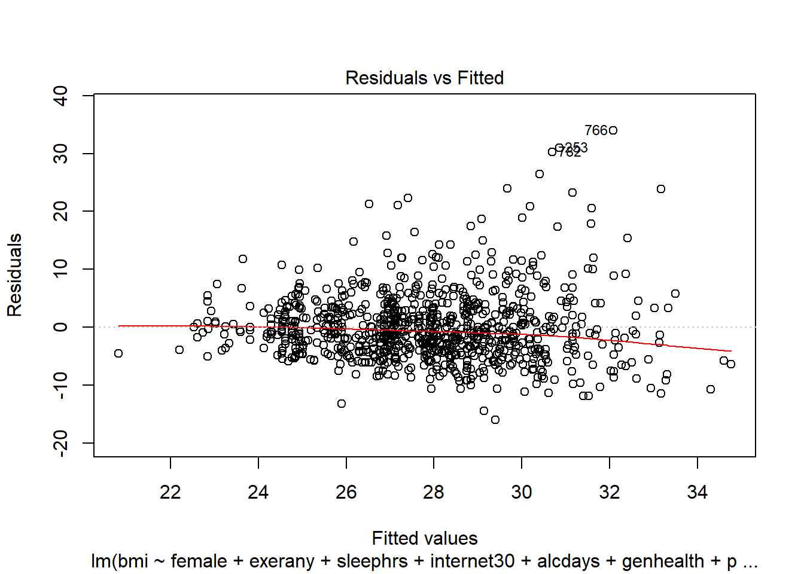

Chapter 2 Linear Regression on a small SMART data set
2.1 BRFSS and SMART
The Centers for Disease Control analyzes Behavioral Risk Factor Surveillance System (BRFSS) survey data for specific metropolitan and micropolitan statistical areas (MMSAs) in a program called the Selected Metropolitan/Micropolitan Area Risk Trends of BRFSS (SMART BRFSS.)
In this work, we will focus on data from the 2016 SMART, and in particular on data from the Cleveland-Elyria, OH, Metropolitan Statistical Area. The purpose of this survey is to provide localized health information that can help public health practitioners identify local emerging health problems, plan and evaluate local responses, and efficiently allocate resources to specific needs.
2.1.1 Key resources
- the full data are available in the form of the 2016 SMART BRFSS MMSA Data, found in a zipped SAS Transport Format file. The data were released in August 2017.
- the MMSA Variable Layout PDF which simply lists the variables included in the data file
- the Calculated Variables PDF which describes the risk factors by data variable names - there is also an online summary matrix of these calculated variables, as well.
- the lengthy 2016 Survey Questions PDF which lists all questions asked as part of the BRFSS in 2016
- the enormous Codebook for the 2016 BRFSS Survey PDF which identifies the variables by name for us.
Later this term, we’ll use all of those resources to help construct a more complete data set than we’ll study today. I’ll also demonstrate how I built the smartcle1 data set that we’ll use in this Chapter.
2.2 The smartcle1 data: Cookbook
The smartcle1.csv data file available on the Data and Code page of our website describes information on 11 variables for 1036 respondents to the BRFSS 2016, who live in the Cleveland-Elyria, OH, Metropolitan Statistical Area. The variables in the smartcle1.csv file are listed below, along with (in some cases) the BRFSS items that generate these responses.
| Variable | Description |
|---|---|
SEQNO |
respondent identification number (all begin with 2016) |
physhealth |
Now thinking about your physical health, which includes physical illness and injury, for how many days during the past 30 days was your physical health not good? |
menthealth |
Now thinking about your mental health, which includes stress, depression, and problems with emotions, for how many days during the past 30 days was your mental health not good? |
poorhealth |
During the past 30 days, for about how many days did poor physical or mental health keep you from doing your usual activities, such as self-care, work, or recreation? |
genhealth |
Would you say that in general, your health is … (five categories: Excellent, Very Good, Good, Fair or Poor) |
bmi |
Body mass index, in kg/m2 |
female |
Sex, 1 = female, 0 = male |
internet30 |
Have you used the internet in the past 30 days? (1 = yes, 0 = no) |
exerany |
During the past month, other than your regular job, did you participate in any physical activities or exercises such as running, calisthenics, golf, gardening, or walking for exercise? (1 = yes, 0 = no) |
sleephrs |
On average, how many hours of sleep do you get in a 24-hour period? |
alcdays |
How many days during the past 30 days did you have at least one drink of any alcoholic beverage such as beer, wine, a malt beverage or liquor? |
str(smartcle1)Classes 'tbl_df', 'tbl' and 'data.frame': 1036 obs. of 11 variables:
$ SEQNO : num 2.02e+09 2.02e+09 2.02e+09 2.02e+09 2.02e+09 ...
$ physhealth: int 0 0 1 0 5 4 2 2 0 0 ...
$ menthealth: int 0 0 5 0 0 18 0 3 0 0 ...
$ poorhealth: int NA NA 0 NA 0 6 0 0 NA NA ...
$ genhealth : Factor w/ 5 levels "1_Excellent",..: 2 1 2 3 1 2 3 3 2 3 ...
$ bmi : num 26.7 23.7 26.9 21.7 24.1 ...
$ female : int 1 0 0 1 0 0 1 1 0 0 ...
$ internet30: int 1 1 1 1 1 1 1 1 1 1 ...
$ exerany : int 1 1 0 1 1 1 1 1 1 0 ...
$ sleephrs : int 6 6 8 9 7 5 9 7 7 7 ...
$ alcdays : int 1 4 4 3 2 28 4 2 4 25 ...2.3 smartcle2: Omitting Missing Observations: Complete-Case Analyses
For the purpose of fitting our first few models, we will eliminate the missingness problem, and look only at the complete cases in our smartcle1 data.
To inspect the missingness in our data, we might consider using the skim function from the skimr package. We’ll exclude the respondent identifier code (SEQNO) from this summary as uninteresting.
smartcle1 %>%
skim(-SEQNO)Skim summary statistics
n obs: 1036
n variables: 11
Variable type: factor
variable missing complete n n_unique
genhealth 3 1033 1036 5
top_counts ordered
2_V: 350, 3_G: 344, 1_E: 173, 4_F: 122 FALSE
Variable type: integer
variable missing complete n mean sd p0 p25 median p75 p100
alcdays 46 990 1036 4.65 8.05 0 0 1 4 30
exerany 3 1033 1036 0.76 0.43 0 1 1 1 1
female 0 1036 1036 0.6 0.49 0 0 1 1 1
internet30 6 1030 1036 0.81 0.39 0 1 1 1 1
menthealth 11 1025 1036 2.72 6.82 0 0 0 2 30
physhealth 17 1019 1036 3.97 8.67 0 0 0 2 30
poorhealth 543 493 1036 4.07 8.09 0 0 0 3 30
sleephrs 8 1028 1036 7.02 1.53 1 6 7 8 20
hist
<U+2587><U+2582><U+2581><U+2581><U+2581><U+2581><U+2581><U+2581>
<U+2582><U+2581><U+2581><U+2581><U+2581><U+2581><U+2581><U+2587>
<U+2585><U+2581><U+2581><U+2581><U+2581><U+2581><U+2581><U+2587>
<U+2582><U+2581><U+2581><U+2581><U+2581><U+2581><U+2581><U+2587>
<U+2587><U+2581><U+2581><U+2581><U+2581><U+2581><U+2581><U+2581>
<U+2587><U+2581><U+2581><U+2581><U+2581><U+2581><U+2581><U+2581>
<U+2587><U+2581><U+2581><U+2581><U+2581><U+2581><U+2581><U+2581>
<U+2581><U+2581><U+2587><U+2581><U+2581><U+2581><U+2581><U+2581>
Variable type: numeric
variable missing complete n mean sd p0 p25 median p75 p100
bmi 84 952 1036 27.89 6.47 12.71 23.7 26.68 30.53 66.06
hist
<U+2581><U+2587><U+2587><U+2582><U+2581><U+2581><U+2581><U+2581>Now, we’ll create a new tibble called smartcle2 which contains every variable except poorhealth, and which includes all respondents with complete data on the variables (other than poorhealth). We’ll store those observations with complete data in the smartcle2 tibble.
smartcle2 <- smartcle1 %>%
select(-poorhealth) %>%
filter(complete.cases(.))
smartcle2# A tibble: 896 x 10
SEQNO physhealth menthealth genhealth bmi female internet30 exerany
<dbl> <int> <int> <fct> <dbl> <int> <int> <int>
1 2.02e9 0 0 2_VeryGo~ 26.7 1 1 1
2 2.02e9 0 0 1_Excell~ 23.7 0 1 1
3 2.02e9 1 5 2_VeryGo~ 26.9 0 1 0
4 2.02e9 0 0 3_Good 21.7 1 1 1
5 2.02e9 5 0 1_Excell~ 24.1 0 1 1
6 2.02e9 4 18 2_VeryGo~ 27.6 0 1 1
7 2.02e9 2 0 3_Good 25.7 1 1 1
8 2.02e9 2 3 3_Good 28.5 1 1 1
9 2.02e9 0 0 2_VeryGo~ 28.6 0 1 1
10 2.02e9 0 0 3_Good 23.1 0 1 0
# ... with 886 more rows, and 2 more variables: sleephrs <int>, alcdays
# <int>Note that there are only 896 respondents with complete data on the 10 variables (excluding poorhealth) in the smartcle2 tibble, as compared to our original smartcle1 data which described 1036 respondents and 11 variables, but with lots of missing data.
2.4 Can we use bmi to predict physhealth?
We’ll start with an effort to predict physhealth using bmi. A natural graph would be a scatterplot.
ggplot(data = smartcle2, aes(x = bmi, y = physhealth)) +
geom_point()
A good question to ask ourselves here might be: “In what BMI range can we make a reasonable prediction of physhealth?”
Now, we might take the plot above and add a simple linear model …
ggplot(data = smartcle2, aes(x = bmi, y = physhealth)) +
geom_point() +
geom_smooth(method = "lm", se = FALSE)
which shows the same least squares regression model that we can fit with the lm command.
2.4.0.1 Fitting a Simple Regression Model
model_A <- lm(physhealth ~ bmi, data = smartcle2)
model_A
Call:
lm(formula = physhealth ~ bmi, data = smartcle2)
Coefficients:
(Intercept) bmi
-1.4514 0.1953 summary(model_A)
Call:
lm(formula = physhealth ~ bmi, data = smartcle2)
Residuals:
Min 1Q Median 3Q Max
-9.171 -4.057 -3.193 -1.576 28.073
Coefficients:
Estimate Std. Error t value Pr(>|t|)
(Intercept) -1.45143 1.29185 -1.124 0.262
bmi 0.19527 0.04521 4.319 1.74e-05 ***
---
Signif. codes: 0 '***' 0.001 '**' 0.01 '*' 0.05 '.' 0.1 ' ' 1
Residual standard error: 8.556 on 894 degrees of freedom
Multiple R-squared: 0.02044, Adjusted R-squared: 0.01934
F-statistic: 18.65 on 1 and 894 DF, p-value: 1.742e-05confint(model_A, level = 0.95) 2.5 % 97.5 %
(Intercept) -3.9868457 1.0839862
bmi 0.1065409 0.2840068The model coefficients can be obtained by printing the model object, and the summary function provides several useful descriptions of the model’s residuals, its statistical significance, and quality of fit.
2.4.1 Model Summary for a Simple (One-Predictor) Regression
The fitted model predicts physhealth with the equation -1.45 + 0.195*bmi, as we can read off from the model coefficients.
Each of the 896 respondents included in the smartcle2 data makes a contribution to this model.
2.4.1.1 Residuals
Suppose Harry is one of the people in that group, and Harry’s data is bmi = 20, and physhealth = 3.
- Harry’s observed value of
physhealthis just the value we have in the data for them, in this case, observedphyshealth= 3 for Harry. - Harry’s fitted or predicted
physhealthvalue is the result of calculating -1.45 + 0.195bmifor Harry. So, if Harry’s BMI was 20, then Harry’s predictedphyshealthvalue is -1.45 + (0.19520) = 2.45. - The residual for Harry is then his observed outcome minus his fitted outcome, so Harry has a residual of 3 - 2.45 = 0.55.
- Graphically, a residual represents vertical distance between the observed point and the fitted regression line.
- Points above the regression line will have positive residuals, and points below the regression line will have negative residuals. Points on the line have zero residuals.
The residuals are summarized at the top of the summary output for linear model.
- The mean residual will always be zero in an ordinary least squares model, but a five number summary of the residuals is provided by the summary, as is an estimated standard deviation of the residuals (called here the Residual standard error.)
- In the
smartcle2data, the minimum residual was -9.17, so for one subject, the observed value was 9.17 days smaller than the predicted value. This means that the prediction was 9.17 days too large for that subject. - Similarly, the maximum residual was 28.07 days, so for one subject the prediction was 28.07 days too small. Not a strong performance.
- In a least squares model, the residuals are assumed to follow a Normal distribution, with mean zero, and standard deviation (for the
smartcle2data) of about 8.6 days. Thus, by the definition of a Normal distribution, we’d expect - about 68% of the residuals to be between -8.6 and +8.6 days,
- about 95% of the residuals to be between -17.2 and +17.2 days,
- about all (99.7%) of the residuals to be between -25.8 and +25.8 days.
2.4.1.2 Coefficients section
The summary for a linear model shows Estimates, Standard Errors, t values and p values for each coefficient fit.
- The Estimates are the point estimates of the intercept and slope of
bmiin our model. - In this case, our estimated slope is 0.195, which implies that if Harry’s BMI is 20 and Sally’s BMI is 21, we predict that Sally’s
physhealthwill be 0.195 days larger than Harry’s. - The Standard Errors are also provided for each estimate. We can create rough 95% confidence intervals by adding and subtracting two standard errors from each coefficient, or we can get a slightly more accurate answer with the
confintfunction. - Here, the 95% confidence interval for the slope of
bmiis estimated to be (0.11, 0.28). This is a good measure of the uncertainty in the slope that is captured by our model. We are 95% confident in the process of building this interval, but this doesn’t mean we’re 95% sure that the true slope is actually in that interval.
Also available are a t value (just the Estimate divided by the Standard Error) and the appropriate p value for testing the null hypothesis that the true value of the coefficient is 0 against a two-tailed alternative.
- If a slope coefficient is statistically significantly different from 0, this implies that 0 will not be part of the uncertainty interval obtained through
confint. - If the slope was zero, it would suggest that
bmiwould add no predictive value to the model. But that’s unlikely here.
If the bmi slope coefficient is associated with a small p value, as in the case of our model_A, it suggests that the model including bmi is statistically significantly better at predicting physhealth than the model without bmi.
- Without
bmiourmodel_Awould become an intercept-only model, in this case, which would predict the meanphyshealthfor everyone, regardless of any other information.
2.4.1.3 Model Fit Summaries
The summary of a linear model also displays:
- The residual standard error and associated degrees of freedom for the residuals.
- For a simple (one-predictor) least regression like this, the residual degrees of freedom will be the sample size minus 2.
- The multiple R-squared (or coefficient of determination)
- This is interpreted as the proportion of variation in the outcome (
physhealth) accounted for by the model, and will always fall between 0 and 1 as a result. - Our model_A accounts for a mere 2% of the variation in
physhealth. - The Adjusted R-squared value “adjusts” for the size of our model in terms of the number of coefficients included in the model.
- The adjusted R-squared will always be less than the Multiple R-squared.
- We still hope to find models with relatively large adjusted R2 values.
- In particular, we hope to find models where the adjusted R2 isn’t substantially less than the Multiple R-squared.
- The adjusted R-squared is usually a better estimate of likely performance of our model in new data than is the Multiple R-squared.
- The adjusted R-squared result is no longer interpretable as a proportion of anything - in fact, it can fall below 0.
- We can obtain the adjusted R2 from the raw R2, the number of observations N and the number of predictors p included in the model, as follows:
\[ R^2_{adj} = 1 - \frac{(1 - R^2)(N - 1)}{N - p - 1}, \]
- The F statistic and p value from a global ANOVA test of the model.
- Obtaining a statistically significant result here is usually pretty straightforward, since the comparison is between our model, and a model which simply predicts the mean value of the outcome for everyone.
- In a simple (one-predictor) linear regression like this, the t statistic for the slope is just the square root of the F statistic, and the resulting p values for the slope’s t test and for the global F test will be identical.
- To see the complete ANOVA F test for this model, we can run
anova(model_A).
anova(model_A)Analysis of Variance Table
Response: physhealth
Df Sum Sq Mean Sq F value Pr(>F)
bmi 1 1366 1365.5 18.655 1.742e-05 ***
Residuals 894 65441 73.2
---
Signif. codes: 0 '***' 0.001 '**' 0.01 '*' 0.05 '.' 0.1 ' ' 12.4.2 Using the broom package
The broom package has three functions of particular use in a linear regression model:
tidybuilds a data frame/tibble containing information about the coefficients in the model, their standard errors, t statistics and p values.
tidy(model_A) term estimate std.error statistic p.value
1 (Intercept) -1.4514298 1.29185199 -1.123526 2.615156e-01
2 bmi 0.1952739 0.04521145 4.319125 1.741859e-05glancebuilds a data frame/tibble containing summary statistics about the model, including- the (raw) multiple R2 and adjusted R^2
sigmawhich is the residual standard error- the F
statistic,p.valuemodeldfanddf.residualassociated with the global ANOVA test, plus - several statistics that will be useful in comparing models down the line:
- the model’s log likelihood function value,
logLik - the model’s Akaike’s Information Criterion value,
AIC - the model’s Bayesian Information Criterion value,
BIC - and the model’s
deviancestatistic
glance(model_A) r.squared adj.r.squared sigma statistic p.value df logLik
1 0.02044019 0.01934449 8.555737 18.65484 1.741859e-05 2 -3193.723
AIC BIC deviance df.residual
1 6393.446 6407.84 65441.36 894augmentbuilds a data frame/tibble which adds fitted values, residuals and other diagnostic summaries that describe each observation to the original data used to fit the model, and this includes.fittedand.resid, the fitted and residual values, in addition to.hat, the leverage value for this observation.cooksd, the Cook’s distance measure of influence for this observation.stdresid, the standardized residual (think of this as a z-score - a measure of the residual divided by its associated standard deviation.sigma)- and
se.fitwhich will help us generate prediction intervals for the model downstream
Note that each of the new columns begins with . to avoid overwriting any data.
augment(model_A) physhealth bmi .fitted .se.fit .resid .hat .sigma
1 0 26.69 3.760430 0.2907252 -3.76043009 0.001154651 8.559600
2 0 23.70 3.176561 0.3422908 -3.17656119 0.001600574 8.559865
3 1 26.92 3.805343 0.2890054 -2.80534308 0.001141030 8.560010
4 0 21.66 2.778202 0.4005101 -2.77820248 0.002191352 8.560020
5 5 24.09 3.252718 0.3329154 1.74728200 0.001514095 8.560326
6 4 27.64 3.945940 0.2860087 0.05405972 0.001117490 8.560526
7 2 25.71 3.569062 0.3019825 -1.56906169 0.001245801 8.560365
8 2 28.52 4.117781 0.2873552 -2.11778129 0.001128037 8.560232
9 0 28.63 4.139261 0.2879099 -4.13926142 0.001132396 8.559404
10 0 23.10 3.059397 0.3579331 -3.05939686 0.001750205 8.559913
11 0 26.60 3.742855 0.2914965 -3.74285544 0.001160785 8.559608
12 30 20.76 2.602456 0.4299951 27.39754402 0.002525877 8.511164
13 0 21.66 2.778202 0.4005101 -2.77820248 0.002191352 8.560020
14 3 32.51 4.896924 0.3546724 -1.89692407 0.001718462 8.560290
15 0 32.60 4.914499 0.3570966 -4.91449872 0.001742034 8.558943
16 0 18.27 2.116224 0.5195177 -2.11622402 0.003687108 8.560232
17 0 21.20 2.688376 0.4153437 -2.68837649 0.002356680 8.560052
18 0 33.13 5.017994 0.3719552 -5.01799388 0.001890021 8.558876
19 3 27.14 3.848303 0.2877025 -0.84830334 0.001130765 8.560479
20 0 13.34 1.153524 0.7162199 -1.15352380 0.007007739 8.560438
21 0 26.60 3.742855 0.2914965 -3.74285544 0.001160785 8.559608
22 0 36.37 5.650681 0.4791047 -5.65068125 0.003135784 8.558431
23 0 27.32 3.883453 0.2868888 -3.88345263 0.001124378 8.559538
24 1 21.03 2.655180 0.4209535 -1.65517993 0.002420770 8.560346
25 0 28.04 4.024050 0.2859361 -4.02404983 0.001116923 8.559465
26 0 26.68 3.758477 0.2908082 -3.75847735 0.001155310 8.559601
27 1 21.17 2.682518 0.4163289 -1.68251827 0.002367872 8.560340
28 6 32.10 4.816862 0.3440220 1.18313822 0.001616805 8.560434
29 0 21.19 2.686424 0.4156719 -2.68642375 0.002360405 8.560053
30 0 27.09 3.838540 0.2879690 -3.83853964 0.001132861 8.559561
31 0 27.32 3.883453 0.2868888 -3.88345263 0.001124378 8.559538
32 0 31.41 4.682123 0.3276877 -4.68212280 0.001466917 8.559090
33 0 12.71 1.030501 0.7424237 -1.03050125 0.007529893 8.560456
34 0 31.83 4.764138 0.3373811 -4.76413783 0.001554986 8.559039
35 0 18.96 2.250963 0.4937660 -2.25096300 0.003330639 8.560193
36 0 25.90 3.606164 0.2993209 -3.60616373 0.001223937 8.559674
37 0 37.86 5.941639 0.5346811 -5.94163933 0.003905483 8.558207
38 0 23.92 3.219521 0.3369208 -3.21952144 0.001550746 8.559847
39 2 28.04 4.024050 0.2859361 -2.02404983 0.001116923 8.560258
40 0 24.11 3.256623 0.3324527 -3.25662348 0.001509889 8.559831
41 0 20.32 2.516535 0.4450535 -2.51653548 0.002705887 8.560110
42 3 30.38 4.480991 0.3076073 -1.48099071 0.001292642 8.560382
43 0 28.63 4.139261 0.2879099 -4.13926142 0.001132396 8.559404
44 1 22.50 2.942233 0.3748880 -1.94223253 0.001919943 8.560279
45 0 25.67 3.561251 0.3025709 -3.56125073 0.001250661 8.559695
46 0 26.31 3.686226 0.2943507 -3.68622602 0.001183628 8.559636
47 0 30.48 4.500518 0.3093068 -4.50051809 0.001306965 8.559199
48 30 40.97 6.548941 0.6578200 23.45105891 0.005911522 8.524265
49 0 26.66 3.754572 0.2909762 -3.75457187 0.001156645 8.559603
50 0 18.76 2.211908 0.5011666 -2.21190822 0.003431227 8.560205
51 0 29.44 4.297433 0.2945592 -4.29743326 0.001185306 8.559316
52 0 22.35 2.912941 0.3793115 -2.91294145 0.001965518 8.559970
53 0 29.15 4.240804 0.2916680 -4.24080383 0.001162152 8.559348
54 0 20.37 2.526299 0.4433231 -2.52629917 0.002684887 8.560107
55 0 28.79 4.170505 0.2888677 -4.17050524 0.001139943 8.559387
56 14 33.80 5.148827 0.3920310 8.85117262 0.002099549 8.555389
57 0 19.29 2.315403 0.4816776 -2.31540338 0.003169553 8.560174
58 2 22.18 2.879745 0.3844078 -0.87974489 0.002018690 8.560475
59 2 25.61 3.549534 0.3034716 -1.54953430 0.001258118 8.560369
60 2 25.05 3.440181 0.3128889 -1.44018093 0.001337413 8.560390
61 0 33.66 5.121489 0.3877264 -5.12148903 0.002053695 8.558807
62 0 25.83 3.592495 0.3002756 -3.59249455 0.001231758 8.559681
63 3 21.97 2.838737 0.3908203 0.16126262 0.002086601 8.560524
64 0 25.76 3.578825 0.3012606 -3.57882538 0.001239852 8.559687
65 30 25.18 3.465567 0.3105443 26.53443347 0.001317444 8.514289
66 0 28.47 4.108018 0.2871312 -4.10801760 0.001126279 8.559421
67 0 31.50 4.699697 0.3296968 -4.69969745 0.001484960 8.559079
68 30 31.39 4.678217 0.3272465 25.32178268 0.001462969 8.518423
69 0 19.49 2.354458 0.4744297 -2.35445816 0.003074886 8.560162
70 1 27.28 3.875642 0.2870499 -2.87564168 0.001125641 8.559984
71 0 29.16 4.242757 0.2917584 -4.24275657 0.001162872 8.559347
72 0 32.18 4.832484 0.3460479 -4.83248369 0.001635903 8.558996
73 0 22.50 2.942233 0.3748880 -2.94223253 0.001919943 8.559958
74 0 40.09 6.377100 0.6222261 -6.37710008 0.005289098 8.557851
75 0 44.02 7.144526 0.7843095 -7.14452643 0.008403499 8.557158
76 0 24.19 3.272245 0.3306201 -3.27224539 0.001493289 8.559824
77 0 34.10 5.207410 0.4014359 -5.20740954 0.002201494 8.558748
78 7 32.02 4.801240 0.3420223 2.19876013 0.001598064 8.560209
79 15 27.31 3.881500 0.2869280 11.11850010 0.001124685 8.552427
80 0 19.88 2.430615 0.4604790 -2.43061497 0.002896709 8.560138
81 0 23.56 3.149223 0.3458137 -3.14922285 0.001633689 8.559876
82 0 23.60 3.157034 0.3447990 -3.15703380 0.001624116 8.559873
83 3 39.28 6.218928 0.5899372 -3.21892824 0.004754411 8.559845
84 0 20.49 2.549732 0.4391899 -2.54973204 0.002635056 8.560099
85 0 24.16 3.266387 0.3313039 -3.26638717 0.001499472 8.559827
86 0 42.21 6.791081 0.7087322 -6.79108070 0.006861980 8.557488
87 0 27.47 3.912744 0.2863856 -3.91274372 0.001120437 8.559523
88 0 28.35 4.084585 0.2866656 -4.08458473 0.001122629 8.559433
89 2 26.66 3.754572 0.2909762 -1.75457187 0.001156645 8.560324
90 0 27.01 3.822918 0.2884316 -3.82291773 0.001136504 8.559569
91 0 24.79 3.389410 0.3178525 -3.38940972 0.001380182 8.559773
92 0 25.76 3.578825 0.3012606 -3.57882538 0.001239852 8.559687
93 0 24.91 3.412843 0.3155169 -3.41284258 0.001359973 8.559763
94 0 24.33 3.299584 0.3274846 -3.29958373 0.001465099 8.559813
95 0 31.01 4.604013 0.3192334 -4.60401325 0.001392201 8.559137
96 1 31.65 4.728989 0.3331288 -3.72898853 0.001516036 8.559615
97 2 27.46 3.910791 0.2864142 -1.91079098 0.001120661 8.560287
98 0 27.38 3.895169 0.2866684 -3.89516907 0.001122651 8.559532
99 1 22.73 2.987146 0.3682447 -1.98714553 0.001852500 8.560267
100 30 25.61 3.549534 0.3034716 26.45046570 0.001258118 8.514585
101 0 22.49 2.940280 0.3751807 -2.94027980 0.001922942 8.559959
102 0 26.49 3.721375 0.2925132 -3.72137531 0.001168897 8.559619
103 0 54.40 9.171469 1.2332475 -9.17146930 0.020777134 8.554906
104 30 22.08 2.860218 0.3874456 27.13978250 0.002050721 8.512114
105 2 31.39 4.678217 0.3272465 -2.67821732 0.001462969 8.560056
106 0 27.47 3.912744 0.2863856 -3.91274372 0.001120437 8.559523
107 25 22.02 2.848501 0.3892821 22.15149893 0.002070208 8.528305
108 1 33.13 5.017994 0.3719552 -4.01799388 0.001890021 8.559468
109 0 26.51 3.725281 0.2923223 -3.72528079 0.001167372 8.559617
110 7 25.71 3.569062 0.3019825 3.43093831 0.001245801 8.559755
111 0 27.31 3.881500 0.2869280 -3.88149990 0.001124685 8.559539
112 0 21.66 2.778202 0.4005101 -2.77820248 0.002191352 8.560020
113 0 35.36 5.453455 0.4432954 -5.45345463 0.002684550 8.558575
114 2 24.25 3.283962 0.3292651 -1.28396182 0.001481073 8.560418
115 0 21.16 2.680566 0.4166577 -2.68056554 0.002371614 8.560055
116 15 23.62 3.160939 0.3442940 11.83906072 0.001619363 8.551338
117 0 25.03 3.436275 0.3132578 -3.43627545 0.001340569 8.559752
118 0 26.87 3.795579 0.2893483 -3.79557939 0.001143739 8.559582
119 30 25.05 3.440181 0.3128889 26.55981907 0.001337413 8.514200
120 0 27.40 3.899075 0.2866006 -3.89907454 0.001122120 8.559530
121 0 29.02 4.215418 0.2905548 -4.21541823 0.001153297 8.559362
122 0 19.32 2.321262 0.4805865 -2.32126160 0.003155211 8.560172
123 30 17.30 1.926808 0.5566620 28.07319164 0.004233195 8.508602
124 0 27.83 3.983042 0.2858316 -3.98304231 0.001116106 8.559487
125 0 29.73 4.354063 0.2979997 -4.35406268 0.001213157 8.559284
126 0 21.34 2.715715 0.4107744 -2.71571483 0.002305111 8.560042
127 0 27.77 3.971326 0.2858596 -3.97132588 0.001116326 8.559493
128 0 26.31 3.686226 0.2943507 -3.68622602 0.001183628 8.559636
129 2 31.39 4.678217 0.3272465 -2.67821732 0.001462969 8.560056
130 0 32.51 4.896924 0.3546724 -4.89692407 0.001718462 8.558955
131 30 34.55 5.295283 0.4159739 24.70471722 0.002363836 8.520418
132 0 25.11 3.451897 0.3117952 -3.45189736 0.001328079 8.559745
133 14 19.61 2.377891 0.4701109 11.62210898 0.003019157 8.551660
134 0 22.50 2.942233 0.3748880 -2.94223253 0.001919943 8.559958
135 15 24.80 3.391362 0.3176549 11.60863754 0.001378467 8.551695
136 0 24.66 3.364024 0.3204671 -3.36402411 0.001402982 8.559785
137 0 34.70 5.324574 0.4209268 -5.32457387 0.002420463 8.558667
138 5 26.68 3.758477 0.2908082 1.24152265 0.001155310 8.560425
139 15 24.54 3.340591 0.3229568 11.65940875 0.001424866 8.551617
140 0 28.93 4.197844 0.2898514 -4.19784358 0.001147720 8.559372
141 0 29.82 4.371637 0.2991762 -4.37163733 0.001222755 8.559274
142 0 31.99 4.795382 0.3412793 -4.79538165 0.001591128 8.559019
143 4 27.83 3.983042 0.2858316 0.01695769 0.001116106 8.560526
144 2 28.25 4.065057 0.2863555 -2.06505734 0.001120202 8.560247
145 1 20.49 2.549732 0.4391899 -1.54973204 0.002635056 8.560368
146 3 26.33 3.690131 0.2941359 -0.69013149 0.001181902 8.560495
147 30 23.87 3.209758 0.3381230 26.79024225 0.001561833 8.513379
148 0 30.78 4.559100 0.3147401 -4.55910026 0.001353285 8.559164
149 5 25.76 3.578825 0.3012606 1.42117462 0.001239852 8.560394
150 5 23.54 3.145317 0.3463235 1.85468263 0.001638510 8.560300
151 0 42.38 6.824277 0.7157721 -6.82427726 0.006998979 8.557458
152 30 33.60 5.109773 0.3858987 24.89022740 0.002034379 8.519826
153 10 23.39 3.116026 0.3501976 6.88397371 0.001675373 8.557420
154 0 28.25 4.065057 0.2863555 -4.06505734 0.001120202 8.559444
155 4 18.83 2.225577 0.4985703 1.77442260 0.003395767 8.560319
156 7 18.00 2.063500 0.5297538 4.93649992 0.003833834 8.558926
157 0 29.49 4.307197 0.2951137 -4.30719695 0.001189773 8.559311
158 30 30.04 4.414598 0.3022636 25.58540241 0.001248122 8.517549
159 0 25.40 3.508527 0.3067922 -3.50852679 0.001285801 8.559720
160 2 28.04 4.024050 0.2859361 -2.02404983 0.001116923 8.560258
161 2 31.32 4.664548 0.3257171 -2.66454815 0.001449327 8.560061
162 0 24.92 3.414795 0.3153257 -3.41479532 0.001358325 8.559762
163 5 35.89 5.556950 0.4618697 -0.55694978 0.002914232 8.560505
164 2 28.25 4.065057 0.2863555 -2.06505734 0.001120202 8.560247
165 30 39.24 6.211117 0.5883558 23.78888272 0.004728956 8.523255
166 0 32.44 4.883255 0.3528079 -4.88325490 0.001700441 8.558963
167 2 29.80 4.367732 0.2989104 -2.36773186 0.001220583 8.560159
168 0 23.82 3.199994 0.3393361 -3.19999406 0.001573060 8.559855
169 0 23.92 3.219521 0.3369208 -3.21952144 0.001550746 8.559847
170 0 23.54 3.145317 0.3463235 -3.14531737 0.001638510 8.559878
171 0 27.14 3.848303 0.2877025 -3.84830334 0.001130765 8.559556
172 7 33.15 5.021899 0.3725345 1.97810065 0.001895912 8.560269
173 10 19.49 2.354458 0.4744297 7.64554184 0.003074886 8.556690
174 30 32.51 4.896924 0.3546724 25.10307593 0.001718462 8.519138
175 0 25.73 3.572967 0.3016919 -3.57296717 0.001243404 8.559690
176 30 26.68 3.758477 0.2908082 26.24152265 0.001155310 8.515315
177 0 23.90 3.215616 0.3374004 -3.21561597 0.001555164 8.559848
178 3 18.78 2.215814 0.5004241 0.78418630 0.003421068 8.560485
179 0 32.10 4.816862 0.3440220 -4.81686178 0.001616805 8.559006
180 30 30.31 4.467322 0.3064517 25.53267847 0.001282949 8.517725
181 30 36.51 5.678020 0.4841993 24.32198041 0.003202827 8.521622
182 0 23.99 3.233191 0.3352560 -3.23319061 0.001535459 8.559841
183 0 24.84 3.399173 0.3168701 -3.39917341 0.001371664 8.559769
184 0 23.04 3.047680 0.3595725 -3.04768043 0.001766274 8.559917
185 0 22.73 2.987146 0.3682447 -2.98714553 0.001852500 8.559941
186 0 25.83 3.592495 0.3002756 -3.59249455 0.001231758 8.559681
187 0 31.47 4.693839 0.3290229 -4.69383924 0.001478895 8.559083
188 0 29.62 4.332583 0.2966312 -4.33258256 0.001202040 8.559296
189 10 33.13 5.017994 0.3719552 4.98200612 0.001890021 8.558899
190 0 25.71 3.569062 0.3019825 -3.56906169 0.001245801 8.559692
191 0 29.23 4.256426 0.2924097 -4.25642574 0.001168070 8.559339
192 0 33.66 5.121489 0.3877264 -5.12148903 0.002053695 8.558807
193 0 29.99 4.404834 0.3015359 -4.40483389 0.001242119 8.559255
194 0 26.66 3.754572 0.2909762 -3.75457187 0.001156645 8.559603
195 0 26.51 3.725281 0.2923223 -3.72528079 0.001167372 8.559617
196 0 38.51 6.068567 0.5597375 -6.06856735 0.004280101 8.558106
197 0 22.28 2.899272 0.3813995 -2.89927228 0.001987217 8.559975
198 0 22.89 3.018389 0.3637271 -3.01838935 0.001807326 8.559929
199 0 31.84 4.766091 0.3376215 -4.76609057 0.001557203 8.559038
200 0 22.18 2.879745 0.3844078 -2.87974489 0.002018690 8.559982
201 2 30.31 4.467322 0.3064517 -2.46732153 0.001282949 8.560127
202 14 30.53 4.510282 0.3101777 9.48971821 0.001314336 8.554626
203 0 25.20 3.469472 0.3101919 -3.46947201 0.001314456 8.559737
204 0 34.93 5.369487 0.4286186 -5.36948686 0.002509732 8.558635
205 0 23.19 3.076972 0.3554987 -3.07697151 0.001726479 8.559905
206 1 26.52 3.727234 0.2922279 -2.72723353 0.001166617 8.560039
207 3 18.78 2.215814 0.5004241 0.78418630 0.003421068 8.560485
208 0 28.93 4.197844 0.2898514 -4.19784358 0.001147720 8.559372
209 0 25.80 3.586636 0.3006941 -3.58663634 0.001235193 8.559683
210 0 24.11 3.256623 0.3324527 -3.25662348 0.001509889 8.559831
211 0 23.03 3.045728 0.3598470 -3.04572769 0.001768972 8.559918
212 30 33.13 5.017994 0.3719552 24.98200612 0.001890021 8.519530
213 0 30.21 4.447794 0.3048503 -4.44779415 0.001269575 8.559230
214 0 25.27 3.483141 0.3089761 -3.48314118 0.001304172 8.559731
215 0 24.88 3.406984 0.3160937 -3.40698437 0.001364950 8.559766
216 0 28.27 4.068963 0.2864118 -4.06896282 0.001120643 8.559442
217 30 21.66 2.778202 0.4005101 27.22179752 0.002191352 8.511813
218 8 24.99 3.428464 0.3140022 4.57153551 0.001346948 8.559157
219 0 25.67 3.561251 0.3025709 -3.56125073 0.001250661 8.559695
220 14 20.49 2.549732 0.4391899 11.45026796 0.002635056 8.551924
221 2 27.77 3.971326 0.2858596 -1.97132588 0.001116326 8.560271
222 30 22.78 2.996909 0.3668236 27.00309078 0.001838230 8.512612
223 2 27.29 3.877594 0.2870085 -1.87759442 0.001125317 8.560295
224 0 25.61 3.549534 0.3034716 -3.54953430 0.001258118 8.559701
225 0 30.77 4.557148 0.3145510 -4.55714752 0.001351660 8.559166
226 0 24.75 3.381599 0.3186477 -3.38159876 0.001387097 8.559777
227 0 23.32 3.102357 0.3520357 -3.10235712 0.001693006 8.559895
228 0 21.34 2.715715 0.4107744 -2.71571483 0.002305111 8.560042
229 0 17.75 2.014682 0.5393048 -2.01468161 0.003973321 8.560259
230 30 20.96 2.641511 0.4232824 27.35848924 0.002447629 8.511309
231 0 25.49 3.526101 0.3053373 -3.52610143 0.001273635 8.559712
232 2 27.42 3.902980 0.2865356 -1.90298002 0.001121611 8.560289
233 10 32.39 4.873491 0.3514874 5.12650880 0.001687737 8.558804
234 0 29.03 4.217371 0.2906364 -4.21737097 0.001153945 8.559361
235 30 35.08 5.398778 0.4336959 24.60122206 0.002569542 8.520746
236 0 30.53 4.510282 0.3101777 -4.51028179 0.001314336 8.559193
237 4 26.16 3.656935 0.2960441 0.34306507 0.001197286 8.560518
238 2 32.14 4.824673 0.3450317 -2.82467273 0.001626309 8.560003
239 0 31.83 4.764138 0.3373811 -4.76413783 0.001554986 8.559039
240 0 25.61 3.549534 0.3034716 -3.54953430 0.001258118 8.559701
241 0 41.47 6.646578 0.6782514 -6.64657803 0.006284439 8.557618
242 30 28.44 4.102159 0.2870052 25.89784062 0.001125291 8.516495
243 0 23.92 3.219521 0.3369208 -3.21952144 0.001550746 8.559847
244 0 24.14 3.262482 0.3317621 -3.26248170 0.001503622 8.559829
245 0 25.76 3.578825 0.3012606 -3.57882538 0.001239852 8.559687
246 0 37.10 5.793231 0.5059756 -5.79323118 0.003497393 8.558323
247 0 23.74 3.184372 0.3412992 -3.18437214 0.001591313 8.559861
248 0 32.20 4.836389 0.3465584 -4.83638917 0.001640733 8.558993
249 0 22.33 2.909036 0.3799065 -2.90903597 0.001971690 8.559971
250 0 27.31 3.881500 0.2869280 -3.88149990 0.001124685 8.559539
251 0 21.86 2.817257 0.3942288 -2.81725725 0.002123156 8.560006
252 0 35.68 5.515942 0.4544498 -5.51594227 0.002821350 8.558530
253 7 61.84 10.624307 1.5624078 -3.62430696 0.033348321 8.559637
254 0 24.38 3.309347 0.3263872 -3.30934743 0.001455296 8.559808
255 2 29.82 4.371637 0.2991762 -2.37163733 0.001222755 8.560157
256 0 28.13 4.041624 0.2860773 -4.04162448 0.001118026 8.559456
257 0 36.16 5.609674 0.4715190 -5.60967373 0.003037272 8.558461
258 2 24.50 3.332780 0.3238027 -1.33278029 0.001432340 8.560409
259 0 32.58 4.910593 0.3565553 -4.91059324 0.001736757 8.558946
260 0 26.66 3.754572 0.2909762 -3.75457187 0.001156645 8.559603
261 0 26.31 3.686226 0.2943507 -3.68622602 0.001183628 8.559636
262 0 18.83 2.225577 0.4985703 -2.22557740 0.003395767 8.560201
263 20 25.52 3.531960 0.3048629 16.46804035 0.001269680 8.542747
264 0 29.02 4.215418 0.2905548 -4.21541823 0.001153297 8.559362
265 30 23.75 3.186325 0.3410523 26.81367512 0.001589012 8.513295
266 0 21.97 2.838737 0.3908203 -2.83873738 0.002086601 8.559998
267 30 24.16 3.266387 0.3313039 26.73361283 0.001499472 8.513582
268 0 21.60 2.766486 0.4024150 -2.76648604 0.002212246 8.560024
269 0 24.99 3.428464 0.3140022 -3.42846449 0.001346948 8.559756
270 0 24.25 3.283962 0.3292651 -3.28396182 0.001481073 8.559819
271 5 29.37 4.283764 0.2938104 0.71623591 0.001179287 8.560492
272 0 29.45 4.299386 0.2946688 -4.29938600 0.001186188 8.559315
273 0 32.82 4.957459 0.3631462 -4.95745897 0.001801558 8.558915
274 0 38.57 6.080284 0.5620716 -6.08028378 0.004315870 8.558097
275 0 31.39 4.678217 0.3272465 -4.67821732 0.001462969 8.559092
276 0 20.24 2.500914 0.4478319 -2.50091357 0.002739778 8.560116
277 6 28.17 4.049435 0.2861587 1.95056457 0.001118662 8.560277
278 0 25.16 3.461661 0.3108989 -3.46166105 0.001320455 8.559741
279 0 29.16 4.242757 0.2917584 -4.24275657 0.001162872 8.559347
280 9 40.67 6.490359 0.6456307 2.50964107 0.005694473 8.560111
281 0 19.25 2.307592 0.4831344 -2.30759242 0.003188755 8.560176
282 0 21.22 2.692282 0.4146882 -2.69228197 0.002349246 8.560051
283 0 23.63 3.162892 0.3440422 -3.16289202 0.001616995 8.559870
284 7 23.70 3.176561 0.3422908 3.82343881 0.001600574 8.559568
285 7 19.62 2.379844 0.4697520 4.62015624 0.003014550 8.559125
286 30 28.79 4.170505 0.2888677 25.82949476 0.001139943 8.516727
287 0 25.18 3.465567 0.3105443 -3.46556653 0.001317444 8.559739
288 0 27.40 3.899075 0.2866006 -3.89907454 0.001122120 8.559530
289 0 23.92 3.219521 0.3369208 -3.21952144 0.001550746 8.559847
290 0 31.65 4.728989 0.3331288 -4.72898853 0.001516036 8.559061
291 0 23.04 3.047680 0.3595725 -3.04768043 0.001766274 8.559917
292 0 25.47 3.522196 0.3056566 -3.52219596 0.001276300 8.559713
293 0 28.93 4.197844 0.2898514 -4.19784358 0.001147720 8.559372
294 0 20.83 2.616125 0.4276359 -2.61612515 0.002498236 8.560077
295 0 33.34 5.059001 0.3781013 -5.05900139 0.001952996 8.558848
296 15 39.09 6.181826 0.5824375 8.81817380 0.004634296 8.555415
297 0 25.01 3.432370 0.3136290 -3.43236997 0.001343747 8.559754
298 0 22.76 2.993004 0.3673911 -2.99300374 0.001843921 8.559939
299 2 32.10 4.816862 0.3440220 -2.81686178 0.001616805 8.560006
300 0 28.35 4.084585 0.2866656 -4.08458473 0.001122629 8.559433
301 0 29.12 4.234946 0.2914010 -4.23494562 0.001160025 8.559351
302 0 28.99 4.209560 0.2903142 -4.20956001 0.001151388 8.559365
303 2 16.22 1.715913 0.5990869 0.28408743 0.004903033 8.560520
304 0 24.11 3.256623 0.3324527 -3.25662348 0.001509889 8.559831
305 0 23.70 3.176561 0.3422908 -3.17656119 0.001600574 8.559865
306 0 23.95 3.225380 0.3362046 -3.22537966 0.001544161 8.559844
307 0 21.69 2.784061 0.3995612 -2.78406069 0.002180980 8.560018
308 0 35.36 5.453455 0.4432954 -5.45345463 0.002684550 8.558575
309 0 39.27 6.216975 0.5895417 -6.21697550 0.004748039 8.557985
310 0 31.28 4.656737 0.3248538 -4.65673720 0.001441654 8.559105
311 2 30.36 4.477085 0.3072742 -2.47708523 0.001289845 8.560124
312 0 30.82 4.566911 0.3155015 -4.56691121 0.001359841 8.559160
313 0 21.82 2.809446 0.3954765 -2.80944630 0.002136617 8.560008
314 0 28.63 4.139261 0.2879099 -4.13926142 0.001132396 8.559404
315 1 25.83 3.592495 0.3002756 -2.59249455 0.001231758 8.560086
316 12 34.20 5.226937 0.4046233 6.77306307 0.002236593 8.557518
317 0 28.17 4.049435 0.2861587 -4.04943543 0.001118662 8.559452
318 0 28.14 4.043577 0.2860966 -4.04357722 0.001118177 8.559455
319 0 26.48 3.719423 0.2926096 -3.71942258 0.001169668 8.559620
320 1 27.09 3.838540 0.2879690 -2.83853964 0.001132861 8.559998
321 0 29.71 4.350157 0.2977452 -4.35015721 0.001211085 8.559286
322 1 33.32 5.055096 0.3775099 -4.05509591 0.001946892 8.559448
323 0 28.16 4.047483 0.2861373 -4.04748269 0.001118495 8.559453
324 1 22.13 2.869981 0.3859231 -1.86998120 0.002034636 8.560297
325 0 32.44 4.883255 0.3528079 -4.88325490 0.001700441 8.558963
326 0 30.10 4.426314 0.3031568 -4.42631402 0.001255509 8.559243
327 0 24.81 3.393315 0.3174580 -3.39331520 0.001376758 8.559772
328 0 30.61 4.525904 0.3116003 -4.52590370 0.001326420 8.559184
329 30 22.38 2.918800 0.3784212 27.08120033 0.001956303 8.512328
330 0 22.49 2.940280 0.3751807 -2.94027980 0.001922942 8.559959
331 0 30.31 4.467322 0.3064517 -4.46732153 0.001282949 8.559219
332 0 27.97 4.010381 0.2858662 -4.01038066 0.001116377 8.559473
333 0 21.19 2.686424 0.4156719 -2.68642375 0.002360405 8.560053
334 30 28.70 4.152931 0.2883070 25.84706941 0.001135522 8.516668
335 10 35.31 5.443691 0.4415698 4.55630907 0.002663692 8.559164
336 0 30.52 4.508329 0.3100024 -4.50832905 0.001312851 8.559195
337 0 25.73 3.572967 0.3016919 -3.57296717 0.001243404 8.559690
338 0 21.20 2.688376 0.4153437 -2.68837649 0.002356680 8.560052
339 2 35.55 5.490557 0.4498955 -3.49055666 0.002765085 8.559727
340 0 26.46 3.715517 0.2928045 -3.71551710 0.001171226 8.559622
341 0 22.68 2.977382 0.3696742 -2.97738183 0.001866910 8.559945
342 10 24.44 3.321064 0.3250862 6.67893614 0.001443718 8.557603
343 0 31.39 4.678217 0.3272465 -4.67821732 0.001462969 8.559092
344 0 26.48 3.719423 0.2926096 -3.71942258 0.001169668 8.559620
345 1 25.11 3.451897 0.3117952 -2.45189736 0.001328079 8.560132
346 2 43.65 7.072275 0.7687559 -5.07227509 0.008073504 8.558829
347 2 28.88 4.188080 0.2894846 -2.18807989 0.001144817 8.560212
348 0 27.32 3.883453 0.2868888 -3.88345263 0.001124378 8.559538
349 0 25.05 3.440181 0.3128889 -3.44018093 0.001337413 8.559751
350 0 22.46 2.934422 0.3760607 -2.93442158 0.001931973 8.559961
351 20 41.65 6.681727 0.6856401 13.31827267 0.006422107 8.548841
352 0 27.01 3.822918 0.2884316 -3.82291773 0.001136504 8.559569
353 10 30.12 4.430219 0.3034594 5.56978050 0.001258016 8.558494
354 30 21.09 2.666896 0.4189661 27.33310364 0.002397965 8.511403
355 0 23.74 3.184372 0.3412992 -3.18437214 0.001591313 8.559861
356 0 32.96 4.984797 0.3670844 -4.98479732 0.001840844 8.558897
357 2 31.29 4.658690 0.3250689 -2.65868994 0.001443564 8.560063
358 30 31.89 4.775854 0.3388301 25.22414574 0.001568372 8.518743
359 0 23.62 3.160939 0.3442940 -3.16093928 0.001619363 8.559871
360 0 27.46 3.910791 0.2864142 -3.91079098 0.001120661 8.559524
361 0 25.10 3.449945 0.3119761 -3.44994462 0.001329621 8.559746
362 0 20.91 2.631747 0.4249525 -2.63174707 0.002466981 8.560072
363 30 28.49 4.111923 0.2872187 25.88807693 0.001126965 8.516529
364 0 27.59 3.936177 0.2860982 -3.93617658 0.001118189 8.559511
365 0 27.31 3.881500 0.2869280 -3.88149990 0.001124685 8.559539
366 0 33.80 5.148827 0.3920310 -5.14882738 0.002099549 8.558788
367 0 40.29 6.416155 0.6302716 -6.41615485 0.005426760 8.557818
368 7 31.92 4.781712 0.3395604 2.21828752 0.001575140 8.560203
369 0 39.99 6.357573 0.6182137 -6.35757269 0.005221105 8.557868
370 30 24.11 3.256623 0.3324527 26.74337652 0.001509889 8.513547
371 2 25.76 3.578825 0.3012606 -1.57882538 0.001239852 8.560363
372 2 23.79 3.194136 0.3400691 -1.19413584 0.001579863 8.560432
373 30 21.71 2.787966 0.3989298 27.21203383 0.002174094 8.511849
374 10 29.12 4.234946 0.2914010 5.76505438 0.001160025 8.558349
375 0 48.88 8.093557 0.9921632 -8.09355748 0.013447805 8.556182
376 0 30.48 4.500518 0.3093068 -4.50051809 0.001306965 8.559199
377 0 42.59 6.865285 0.7244865 -6.86528478 0.007170440 8.557420
378 0 26.51 3.725281 0.2923223 -3.72528079 0.001167372 8.559617
379 20 23.39 3.116026 0.3501976 16.88397371 0.001675373 8.541829
380 5 47.80 7.882662 0.9455096 -2.88266169 0.012212850 8.559976
381 0 20.32 2.516535 0.4450535 -2.51653548 0.002705887 8.560110
382 1 25.06 3.442134 0.3127052 -2.44213367 0.001335843 8.560135
383 30 19.63 2.381796 0.4693933 27.61820350 0.003009947 8.510339
384 0 36.51 5.678020 0.4841993 -5.67801959 0.003202827 8.558410
385 30 27.92 4.000617 0.2858378 25.99938304 0.001116155 8.516149
386 0 24.75 3.381599 0.3186477 -3.38159876 0.001387097 8.559777
387 5 26.46 3.715517 0.2928045 1.28448290 0.001171226 8.560418
388 1 25.71 3.569062 0.3019825 -2.56906169 0.001245801 8.560094
389 0 21.97 2.838737 0.3908203 -2.83873738 0.002086601 8.559998
390 0 24.98 3.426512 0.3141897 -3.42651176 0.001348556 8.559757
391 5 23.05 3.049633 0.3592984 1.95036683 0.001763582 8.560277
392 0 23.92 3.219521 0.3369208 -3.21952144 0.001550746 8.559847
393 0 32.20 4.836389 0.3465584 -4.83638917 0.001640733 8.558993
394 0 29.03 4.217371 0.2906364 -4.21737097 0.001153945 8.559361
395 0 30.82 4.566911 0.3155015 -4.56691121 0.001359841 8.559160
396 0 46.30 7.589751 0.8811039 -7.58975087 0.010605702 8.556717
397 15 20.39 2.530205 0.4426323 12.46979535 0.002676526 8.550322
398 0 30.80 4.563006 0.3151197 -4.56300574 0.001356552 8.559162
399 0 23.07 3.053539 0.3587512 -3.05353865 0.001758215 8.559915
400 0 23.32 3.102357 0.3520357 -3.10235712 0.001693006 8.559895
401 0 27.31 3.881500 0.2869280 -3.88149990 0.001124685 8.559539
402 0 24.99 3.428464 0.3140022 -3.42846449 0.001346948 8.559756
403 0 25.76 3.578825 0.3012606 -3.57882538 0.001239852 8.559687
404 0 24.11 3.256623 0.3324527 -3.25662348 0.001509889 8.559831
405 2 35.44 5.469077 0.4460661 -3.46907654 0.002718214 8.559736
406 0 28.56 4.125592 0.2875471 -4.12559225 0.001129544 8.559411
407 10 24.99 3.428464 0.3140022 6.57153551 0.001346948 8.557697
408 0 25.34 3.496810 0.3077881 -3.49681035 0.001294163 8.559725
409 30 25.69 3.565156 0.3022755 26.43484379 0.001248220 8.514640
410 20 28.13 4.041624 0.2860773 15.95837552 0.001118026 8.543834
411 0 28.44 4.102159 0.2870052 -4.10215938 0.001125291 8.559424
412 0 27.47 3.912744 0.2863856 -3.91274372 0.001120437 8.559523
413 4 32.78 4.949648 0.3620335 -0.94964802 0.001790534 8.560467
414 0 33.66 5.121489 0.3877264 -5.12148903 0.002053695 8.558807
415 2 25.05 3.440181 0.3128889 -1.44018093 0.001337413 8.560390
416 30 29.27 4.264237 0.2927967 25.73576330 0.001171163 8.517044
417 1 28.89 4.190033 0.2895566 -3.19003263 0.001145386 8.559859
418 0 33.13 5.017994 0.3719552 -5.01799388 0.001890021 8.558876
419 10 23.49 3.135554 0.3476049 6.86444632 0.001650658 8.557438
420 0 28.63 4.139261 0.2879099 -4.13926142 0.001132396 8.559404
421 0 24.49 3.330828 0.3240154 -3.33082755 0.001434222 8.559799
422 30 27.40 3.899075 0.2866006 26.10092546 0.001122120 8.515800
423 0 29.12 4.234946 0.2914010 -4.23494562 0.001160025 8.559351
424 6 21.34 2.715715 0.4107744 3.28428517 0.002305111 8.559819
425 0 20.89 2.627842 0.4256220 -2.62784159 0.002474762 8.560073
426 0 26.67 3.756525 0.2908919 -3.75652461 0.001155975 8.559602
427 0 27.32 3.883453 0.2868888 -3.88345263 0.001124378 8.559538
428 0 29.35 4.279859 0.2936023 -4.27985861 0.001177617 8.559326
429 4 26.77 3.776052 0.2900859 0.22394800 0.001149578 8.560523
430 0 21.66 2.778202 0.4005101 -2.77820248 0.002191352 8.560020
431 0 27.15 3.850256 0.2876513 -3.85025607 0.001130363 8.559555
432 2 25.71 3.569062 0.3019825 -1.56906169 0.001245801 8.560365
433 2 22.76 2.993004 0.3673911 -0.99300374 0.001843921 8.560461
434 1 36.80 5.734649 0.4948430 -4.73464901 0.003345184 8.559055
435 0 19.04 2.266585 0.4908212 -2.26658491 0.003291030 8.560189
436 0 38.89 6.142771 0.5745760 -6.14277142 0.004510037 8.558046
437 2 19.14 2.286112 0.4871529 -0.28611230 0.003242020 8.560520
438 0 32.51 4.896924 0.3546724 -4.89692407 0.001718462 8.558955
439 0 29.03 4.217371 0.2906364 -4.21737097 0.001153945 8.559361
440 2 22.50 2.942233 0.3748880 -0.94223253 0.001919943 8.560468
441 30 31.39 4.678217 0.3272465 25.32178268 0.001462969 8.518423
442 0 24.11 3.256623 0.3324527 -3.25662348 0.001509889 8.559831
443 0 33.13 5.017994 0.3719552 -5.01799388 0.001890021 8.558876
444 30 57.04 9.686992 1.3496392 20.31300766 0.024884021 8.532804
445 30 27.28 3.875642 0.2870499 26.12435832 0.001125641 8.515720
446 18 21.97 2.838737 0.3908203 15.16126262 0.002086601 8.545447
447 0 25.71 3.569062 0.3019825 -3.56906169 0.001245801 8.559692
448 0 26.66 3.754572 0.2909762 -3.75457187 0.001156645 8.559603
449 0 29.80 4.367732 0.2989104 -4.36773186 0.001220583 8.559276
450 0 25.61 3.549534 0.3034716 -3.54953430 0.001258118 8.559701
451 0 25.20 3.469472 0.3101919 -3.46947201 0.001314456 8.559737
452 0 23.90 3.215616 0.3374004 -3.21561597 0.001555164 8.559848
453 0 26.48 3.719423 0.2926096 -3.71942258 0.001169668 8.559620
454 0 31.89 4.775854 0.3388301 -4.77585426 0.001568372 8.559031
455 1 27.28 3.875642 0.2870499 -2.87564168 0.001125641 8.559984
456 0 29.02 4.215418 0.2905548 -4.21541823 0.001153297 8.559362
457 0 26.37 3.697942 0.2937144 -3.69794245 0.001178516 8.559630
458 5 25.49 3.526101 0.3053373 1.47389857 0.001273635 8.560384
459 0 28.93 4.197844 0.2898514 -4.19784358 0.001147720 8.559372
460 0 37.93 5.955308 0.5373584 -5.95530850 0.003944693 8.558197
461 0 30.64 4.531762 0.3121430 -4.53176192 0.001331044 8.559181
462 0 26.82 3.785816 0.2897085 -3.78581569 0.001146589 8.559587
463 0 27.83 3.983042 0.2858316 -3.98304231 0.001116106 8.559487
464 0 28.82 4.176363 0.2890671 -4.17636345 0.001141518 8.559384
465 0 22.62 2.965665 0.3714005 -2.96566540 0.001884387 8.559949
466 5 30.03 4.412645 0.3021169 0.58735515 0.001246910 8.560503
467 0 21.16 2.680566 0.4166577 -2.68056554 0.002371614 8.560055
468 0 26.58 3.738950 0.2916753 -3.73894996 0.001162210 8.559610
469 5 20.36 2.524346 0.4436688 2.47565357 0.002689076 8.560124
470 0 25.76 3.578825 0.3012606 -3.57882538 0.001239852 8.559687
471 0 35.55 5.490557 0.4498955 -5.49055666 0.002765085 8.558548
472 2 32.14 4.824673 0.3450317 -2.82467273 0.001626309 8.560003
473 30 25.11 3.451897 0.3117952 26.54810264 0.001328079 8.514241
474 0 28.23 4.061152 0.2863020 -4.06115186 0.001119783 8.559446
475 0 26.95 3.811201 0.2888079 -3.81120130 0.001139471 8.559575
476 3 35.77 5.533517 0.4576204 -2.53351692 0.002860855 8.560105
477 30 31.86 4.769996 0.3381036 25.23000395 0.001561654 8.518724
478 15 33.86 5.160544 0.3938926 9.83945619 0.002119536 8.554178
479 2 23.37 3.112121 0.3507208 -1.11212081 0.001680383 8.560445
480 30 36.65 5.705358 0.4893227 24.29464207 0.003270965 8.521706
481 0 26.51 3.725281 0.2923223 -3.72528079 0.001167372 8.559617
482 0 26.39 3.701848 0.2935076 -3.70184793 0.001176857 8.559628
483 0 24.11 3.256623 0.3324527 -3.25662348 0.001509889 8.559831
484 3 34.75 5.334338 0.4225891 -2.33433756 0.002439618 8.560169
485 20 22.02 2.848501 0.3892821 17.15149893 0.002070208 8.541223
486 0 20.83 2.616125 0.4276359 -2.61612515 0.002498236 8.560077
487 0 24.98 3.426512 0.3141897 -3.42651176 0.001348556 8.559757
488 0 21.17 2.682518 0.4163289 -2.68251827 0.002367872 8.560054
489 3 26.52 3.727234 0.2922279 -0.72723353 0.001166617 8.560491
490 30 28.13 4.041624 0.2860773 25.95837552 0.001118026 8.516289
491 2 33.13 5.017994 0.3719552 -3.01799388 0.001890021 8.559929
492 0 25.61 3.549534 0.3034716 -3.54953430 0.001258118 8.559701
493 0 35.44 5.469077 0.4460661 -5.46907654 0.002718214 8.558564
494 0 26.22 3.668651 0.2953492 -3.66865137 0.001191672 8.559644
495 0 20.30 2.512630 0.4457470 -2.51263000 0.002714326 8.560112
496 0 26.20 3.664746 0.2955783 -3.66474589 0.001193521 8.559646
497 1 22.08 2.860218 0.3874456 -1.86021750 0.002050721 8.560299
498 30 36.65 5.705358 0.4893227 24.29464207 0.003270965 8.521706
499 30 28.79 4.170505 0.2888677 25.82949476 0.001139943 8.516727
500 0 22.66 2.973476 0.3702483 -2.97347635 0.001872713 8.559946
501 0 23.90 3.215616 0.3374004 -3.21561597 0.001555164 8.559848
502 30 25.76 3.578825 0.3012606 26.42117462 0.001239852 8.514688
503 0 22.50 2.942233 0.3748880 -2.94223253 0.001919943 8.559958
504 5 28.93 4.197844 0.2898514 0.80215642 0.001147720 8.560484
505 0 29.80 4.367732 0.2989104 -4.36773186 0.001220583 8.559276
506 0 23.05 3.049633 0.3592984 -3.04963317 0.001763582 8.559916
507 14 19.49 2.354458 0.4744297 11.64554184 0.003074886 8.551624
508 0 52.11 8.724292 1.1327866 -8.72429211 0.017529977 8.555457
509 0 24.62 3.356213 0.3212890 -3.35621316 0.001410188 8.559788
510 0 39.27 6.216975 0.5895417 -6.21697550 0.004748039 8.557985
511 10 38.08 5.984600 0.5431131 4.01540042 0.004029635 8.559467
512 15 49.47 8.208769 1.0177361 6.79123093 0.014149970 8.557465
513 0 25.90 3.606164 0.2993209 -3.60616373 0.001223937 8.559674
514 0 25.58 3.543676 0.3039300 -3.54367608 0.001261922 8.559703
515 0 22.45 2.932469 0.3763547 -2.93246884 0.001934995 8.559962
516 30 41.41 6.634862 0.6757923 23.36513840 0.006238952 8.524519
517 30 18.25 2.112319 0.5202730 27.88768145 0.003697837 8.509316
518 0 30.53 4.510282 0.3101777 -4.51028179 0.001314336 8.559193
519 0 28.93 4.197844 0.2898514 -4.19784358 0.001147720 8.559372
520 0 21.52 2.750864 0.4049691 -2.75086413 0.002240418 8.560030
521 0 23.73 3.182419 0.3415464 -3.18241941 0.001593620 8.559862
522 0 34.15 5.217173 0.4030264 -5.21717323 0.002218974 8.558741
523 0 26.46 3.715517 0.2928045 -3.71551710 0.001171226 8.559622
524 0 24.52 3.336686 0.3233788 -3.33668577 0.001428592 8.559797
525 0 26.68 3.758477 0.2908082 -3.75847735 0.001155310 8.559601
526 0 27.32 3.883453 0.2868888 -3.88345263 0.001124378 8.559538
527 0 22.33 2.909036 0.3799065 -2.90903597 0.001971690 8.559971
528 30 33.58 5.105867 0.3852917 24.89413288 0.002027984 8.519813
529 10 56.89 9.657701 1.3430121 0.34229874 0.024640246 8.560518
530 5 35.36 5.453455 0.4432954 -0.45345463 0.002684550 8.560512
531 10 25.52 3.531960 0.3048629 6.46804035 0.001269680 8.557786
532 0 25.45 3.518290 0.3059781 -3.51829048 0.001278986 8.559715
533 0 31.28 4.656737 0.3248538 -4.65673720 0.001441654 8.559105
534 30 41.54 6.660247 0.6811227 23.33975280 0.006337762 8.524594
535 0 23.90 3.215616 0.3374004 -3.21561597 0.001555164 8.559848
536 5 25.52 3.531960 0.3048629 1.46804035 0.001269680 8.560385
537 0 35.28 5.437833 0.4405369 -5.43783272 0.002651244 8.558586
538 5 31.58 4.715319 0.3315144 0.28468064 0.001501377 8.560520
539 0 28.79 4.170505 0.2888677 -4.17050524 0.001139943 8.559387
540 0 32.44 4.883255 0.3528079 -4.88325490 0.001700441 8.558963
541 0 24.19 3.272245 0.3306201 -3.27224539 0.001493289 8.559824
542 0 18.40 2.141610 0.5146199 -2.14160963 0.003617914 8.560225
543 1 24.84 3.399173 0.3168701 -2.39917341 0.001371664 8.560149
544 0 29.62 4.332583 0.2966312 -4.33258256 0.001202040 8.559296
545 0 32.33 4.861775 0.3499156 -4.86177477 0.001672676 8.558977
546 0 27.32 3.883453 0.2868888 -3.88345263 0.001124378 8.559538
547 0 23.86 3.207805 0.3383648 -3.20780501 0.001564067 8.559852
548 0 39.76 6.312660 0.6090122 -6.31265970 0.005066839 8.557906
549 0 23.32 3.102357 0.3520357 -3.10235712 0.001693006 8.559895
550 0 29.53 4.315008 0.2955690 -4.31500791 0.001193446 8.559306
551 0 19.63 2.381796 0.4693933 -2.38179650 0.003009947 8.560154
552 0 26.51 3.725281 0.2923223 -3.72528079 0.001167372 8.559617
553 0 20.89 2.627842 0.4256220 -2.62784159 0.002474762 8.560073
554 30 25.13 3.455803 0.3114350 26.54419716 0.001325013 8.514255
555 0 27.32 3.883453 0.2868888 -3.88345263 0.001124378 8.559538
556 0 31.41 4.682123 0.3276877 -4.68212280 0.001466917 8.559090
557 0 22.90 3.020342 0.3634477 -3.02034209 0.001804551 8.559928
558 30 28.32 4.078727 0.2865651 25.92127349 0.001121842 8.516416
559 0 30.18 4.441936 0.3043813 -4.44193593 0.001265672 8.559234
560 0 27.32 3.883453 0.2868888 -3.88345263 0.001124378 8.559538
561 0 28.32 4.078727 0.2865651 -4.07872651 0.001121842 8.559436
562 0 35.44 5.469077 0.4460661 -5.46907654 0.002718214 8.558564
563 4 23.05 3.049633 0.3592984 0.95036683 0.001763582 8.560467
564 0 26.66 3.754572 0.2909762 -3.75457187 0.001156645 8.559603
565 30 21.70 2.786013 0.3992454 27.21398657 0.002177534 8.511842
566 0 26.41 3.705753 0.2933034 -3.70575340 0.001175220 8.559626
567 0 29.40 4.289622 0.2941274 -4.28962230 0.001181833 8.559321
568 30 30.48 4.500518 0.3093068 25.49948191 0.001306965 8.517835
569 30 49.69 8.251729 1.0272861 21.74827068 0.014416771 8.529079
570 0 26.52 3.727234 0.2922279 -3.72723353 0.001166617 8.559616
571 3 34.55 5.295283 0.4159739 -2.29528278 0.002363836 8.560180
572 0 51.04 8.515349 1.0860442 -8.51534906 0.016113140 8.555704
573 0 40.12 6.382958 0.6234312 -6.38295830 0.005309605 8.557846
574 7 27.32 3.883453 0.2868888 3.11654737 0.001124378 8.559890
575 0 21.69 2.784061 0.3995612 -2.78406069 0.002180980 8.560018
576 30 23.54 3.145317 0.3463235 26.85468263 0.001638510 8.513148
577 0 28.23 4.061152 0.2863020 -4.06115186 0.001119783 8.559446
578 0 22.18 2.879745 0.3844078 -2.87974489 0.002018690 8.559982
579 0 22.73 2.987146 0.3682447 -2.98714553 0.001852500 8.559941
580 0 38.45 6.056851 0.5574069 -6.05685092 0.004244532 8.558116
581 0 29.82 4.371637 0.2991762 -4.37163733 0.001222755 8.559274
582 0 38.98 6.160346 0.5781094 -6.16034607 0.004565677 8.558032
583 0 47.80 7.882662 0.9455096 -7.88266169 0.012212850 8.556410
584 0 37.67 5.904537 0.5274413 -5.90453729 0.003800436 8.558237
585 0 24.34 3.301536 0.3272642 -3.30153647 0.001463127 8.559812
586 0 25.67 3.561251 0.3025709 -3.56125073 0.001250661 8.559695
587 7 20.89 2.627842 0.4256220 4.37215841 0.002474762 8.559272
588 10 22.90 3.020342 0.3634477 6.97965791 0.001804551 8.557333
589 2 32.51 4.896924 0.3546724 -2.89692407 0.001718462 8.559976
590 0 28.14 4.043577 0.2860966 -4.04357722 0.001118177 8.559455
591 0 23.43 3.123837 0.3491558 -3.12383724 0.001665420 8.559886
592 30 25.76 3.578825 0.3012606 26.42117462 0.001239852 8.514688
593 0 34.86 5.355818 0.4262655 -5.35581769 0.002482250 8.558645
594 0 23.70 3.176561 0.3422908 -3.17656119 0.001600574 8.559865
595 0 22.90 3.020342 0.3634477 -3.02034209 0.001804551 8.559928
596 30 41.64 6.679775 0.6852291 23.32022541 0.006414412 8.524651
597 3 25.28 3.485094 0.3088047 -0.48509392 0.001302726 8.560510
598 10 39.37 6.236503 0.5935000 3.76349711 0.004812011 8.559595
599 0 21.69 2.784061 0.3995612 -2.78406069 0.002180980 8.560018
600 0 25.76 3.578825 0.3012606 -3.57882538 0.001239852 8.559687
601 0 29.39 4.287670 0.2940211 -4.28766957 0.001180979 8.559322
602 0 28.79 4.170505 0.2888677 -4.17050524 0.001139943 8.559387
603 0 19.84 2.422804 0.4618983 -2.42280401 0.002914592 8.560141
604 4 23.04 3.047680 0.3595725 0.95231957 0.001766274 8.560466
605 0 27.31 3.881500 0.2869280 -3.88149990 0.001124685 8.559539
606 2 28.88 4.188080 0.2894846 -2.18807989 0.001144817 8.560212
607 0 24.34 3.301536 0.3272642 -3.30153647 0.001463127 8.559812
608 1 34.16 5.219126 0.4033453 -4.21912597 0.002222486 8.559359
609 0 28.16 4.047483 0.2861373 -4.04748269 0.001118495 8.559453
610 30 21.47 2.741100 0.4065737 27.25889956 0.002258207 8.511677
611 0 25.76 3.578825 0.3012606 -3.57882538 0.001239852 8.559687
612 30 38.57 6.080284 0.5620716 23.91971622 0.004315870 8.522858
613 7 38.47 6.060756 0.5581834 0.93924361 0.004256366 8.560468
614 0 21.25 2.698140 0.4137065 -2.69814018 0.002338137 8.560049
615 0 21.69 2.784061 0.3995612 -2.78406069 0.002180980 8.560018
616 0 31.54 4.707508 0.3306019 -4.70750841 0.001493124 8.559074
617 5 28.32 4.078727 0.2865651 0.92127349 0.001121842 8.560470
618 0 26.58 3.738950 0.2916753 -3.73894996 0.001162210 8.559610
619 30 48.21 7.962724 0.9631953 22.03727602 0.012674005 8.528293
620 0 28.63 4.139261 0.2879099 -4.13926142 0.001132396 8.559404
621 6 29.22 4.254473 0.2923147 1.74552699 0.001167311 8.560326
622 0 30.31 4.467322 0.3064517 -4.46732153 0.001282949 8.559219
623 0 19.62 2.379844 0.4697520 -2.37984376 0.003014550 8.560154
624 0 19.63 2.381796 0.4693933 -2.38179650 0.003009947 8.560154
625 3 29.99 4.404834 0.3015359 -1.40483389 0.001242119 8.560397
626 0 26.58 3.738950 0.2916753 -3.73894996 0.001162210 8.559610
627 0 37.49 5.869388 0.5206205 -5.86938799 0.003702778 8.558264
628 0 28.44 4.102159 0.2870052 -4.10215938 0.001125291 8.559424
629 0 21.92 2.828974 0.3923655 -2.82897368 0.002103133 8.560001
630 0 22.34 2.910989 0.3796088 -2.91098871 0.001968601 8.559970
631 15 40.97 6.548941 0.6578200 8.45105891 0.005911522 8.555825
632 4 36.32 5.640918 0.4772924 -1.64091755 0.003112105 8.560349
633 4 25.69 3.565156 0.3022755 0.43484379 0.001248220 8.560513
634 0 25.77 3.580778 0.3011180 -3.58077812 0.001238679 8.559686
635 15 40.92 6.539177 0.6557847 8.46082260 0.005874998 8.555815
636 0 19.56 2.368127 0.4719076 -2.36812733 0.003042280 8.560158
637 0 30.39 4.482943 0.3077747 -4.48294345 0.001294049 8.559210
638 0 33.74 5.137111 0.3901794 -5.13711094 0.002079764 8.558796
639 1 24.14 3.262482 0.3317621 -2.26248170 0.001503622 8.560190
640 0 32.14 4.824673 0.3450317 -4.82467273 0.001626309 8.559001
641 20 30.22 4.449747 0.3050078 15.55025311 0.001270887 8.544675
642 0 22.73 2.987146 0.3682447 -2.98714553 0.001852500 8.559941
643 3 34.36 5.258181 0.4097753 -2.25818075 0.002293912 8.560191
644 0 27.00 3.820965 0.2884926 -3.82096499 0.001136984 8.559570
645 0 24.44 3.321064 0.3250862 -3.32106386 0.001443718 8.559803
646 5 53.58 9.011345 1.1972144 -4.01134472 0.019580737 8.559452
647 0 24.84 3.399173 0.3168701 -3.39917341 0.001371664 8.559769
648 0 24.75 3.381599 0.3186477 -3.38159876 0.001387097 8.559777
649 0 28.32 4.078727 0.2865651 -4.07872651 0.001121842 8.559436
650 0 24.34 3.301536 0.3272642 -3.30153647 0.001463127 8.559812
651 0 25.11 3.451897 0.3117952 -3.45189736 0.001328079 8.559745
652 2 28.79 4.170505 0.2888677 -2.17050524 0.001139943 8.560217
653 0 20.49 2.549732 0.4391899 -2.54973204 0.002635056 8.560099
654 1 42.68 6.882859 0.7282273 -5.88285943 0.007244678 8.558245
655 1 21.47 2.741100 0.4065737 -1.74110044 0.002258207 8.560327
656 2 27.29 3.877594 0.2870085 -1.87759442 0.001125317 8.560295
657 0 24.50 3.332780 0.3238027 -3.33278029 0.001432340 8.559798
658 0 29.22 4.254473 0.2923147 -4.25447301 0.001167311 8.559340
659 2 28.35 4.084585 0.2866656 -2.08458473 0.001122629 8.560241
660 0 28.13 4.041624 0.2860773 -4.04162448 0.001118026 8.559456
661 15 29.44 4.297433 0.2945592 10.70256674 0.001185306 8.553022
662 0 27.09 3.838540 0.2879690 -3.83853964 0.001132861 8.559561
663 4 28.04 4.024050 0.2859361 -0.02404983 0.001116923 8.560526
664 0 28.25 4.065057 0.2863555 -4.06505734 0.001120202 8.559444
665 0 21.26 2.700093 0.4133798 -2.70009292 0.002334445 8.560048
666 0 34.04 5.195693 0.3995358 -5.19569311 0.002180703 8.558756
667 0 28.14 4.043577 0.2860966 -4.04357722 0.001118177 8.559455
668 0 19.99 2.452095 0.4565902 -2.45209510 0.002847990 8.560131
669 0 33.38 5.066812 0.3792876 -5.06681235 0.001965271 8.558843
670 1 41.47 6.646578 0.6782514 -5.64657803 0.006284439 8.558427
671 7 25.76 3.578825 0.3012606 3.42117462 0.001239852 8.559759
672 0 20.46 2.543874 0.4402206 -2.54387382 0.002647438 8.560101
673 0 33.18 5.027758 0.3734059 -5.02775757 0.001904791 8.558869
674 5 25.11 3.451897 0.3117952 1.54810264 0.001328079 8.560369
675 0 29.44 4.297433 0.2945592 -4.29743326 0.001185306 8.559316
676 0 31.50 4.699697 0.3296968 -4.69969745 0.001484960 8.559079
677 0 41.52 6.656342 0.6803021 -6.65634173 0.006322499 8.557609
678 0 30.31 4.467322 0.3064517 -4.46732153 0.001282949 8.559219
679 0 27.01 3.822918 0.2884316 -3.82291773 0.001136504 8.559569
680 5 24.38 3.309347 0.3263872 1.69065257 0.001455296 8.560339
681 0 21.71 2.787966 0.3989298 -2.78796617 0.002174094 8.560016
682 5 14.72 1.423002 0.6594820 3.57699825 0.005941431 8.559684
683 30 37.24 5.820570 0.5112111 24.17943048 0.003570143 8.522063
684 0 30.61 4.525904 0.3116003 -4.52590370 0.001326420 8.559184
685 0 27.13 3.846351 0.2877544 -3.84635060 0.001131173 8.559557
686 3 23.10 3.059397 0.3579331 -0.05939686 0.001750205 8.560526
687 0 33.57 5.103914 0.3849887 -5.10391438 0.002024796 8.558818
688 2 30.80 4.563006 0.3151197 -2.56300574 0.001356552 8.560096
689 3 23.49 3.135554 0.3476049 -0.13555368 0.001650658 8.560525
690 0 29.02 4.215418 0.2905548 -4.21541823 0.001153297 8.559362
691 30 21.47 2.741100 0.4065737 27.25889956 0.002258207 8.511677
692 0 19.84 2.422804 0.4618983 -2.42280401 0.002914592 8.560141
693 12 30.61 4.525904 0.3116003 7.47409630 0.001326420 8.556866
694 0 22.88 3.016437 0.3640069 -3.01643661 0.001810108 8.559930
695 0 33.46 5.082434 0.3816749 -5.08243426 0.001990088 8.558833
696 0 27.47 3.912744 0.2863856 -3.91274372 0.001120437 8.559523
697 0 23.25 3.088688 0.3538925 -3.08868794 0.001710913 8.559901
698 0 29.62 4.332583 0.2966312 -4.33258256 0.001202040 8.559296
699 2 24.80 3.391362 0.3176549 -1.39136246 0.001378467 8.560399
700 0 27.40 3.899075 0.2866006 -3.89907454 0.001122120 8.559530
701 30 37.77 5.924065 0.5312467 24.07593532 0.003855473 8.522381
702 0 26.66 3.754572 0.2909762 -3.75457187 0.001156645 8.559603
703 0 20.09 2.471622 0.4530734 -2.47162248 0.002804286 8.560125
704 12 30.18 4.441936 0.3043813 7.55806407 0.001265672 8.556784
705 0 20.24 2.500914 0.4478319 -2.50091357 0.002739778 8.560116
706 0 19.49 2.354458 0.4744297 -2.35445816 0.003074886 8.560162
707 3 24.25 3.283962 0.3292651 -0.28396182 0.001481073 8.560521
708 14 22.73 2.987146 0.3682447 11.01285447 0.001852500 8.552575
709 2 18.90 2.239247 0.4959805 -0.23924657 0.003360581 8.560522
710 14 30.31 4.467322 0.3064517 9.53267847 0.001282949 8.554573
711 0 27.99 4.014286 0.2858826 -4.01428613 0.001116505 8.559471
712 0 22.53 2.948091 0.3740118 -2.94809075 0.001910978 8.559956
713 0 25.76 3.578825 0.3012606 -3.57882538 0.001239852 8.559687
714 0 22.20 2.883650 0.3838038 -2.88365037 0.002012351 8.559981
715 0 22.90 3.020342 0.3634477 -3.02034209 0.001804551 8.559928
716 2 48.21 7.962724 0.9631953 -5.96272398 0.012674005 8.558170
717 0 28.32 4.078727 0.2865651 -4.07872651 0.001121842 8.559436
718 0 27.42 3.902980 0.2865356 -3.90298002 0.001121611 8.559528
719 0 23.22 3.082830 0.3546939 -3.08282973 0.001718671 8.559903
720 0 28.44 4.102159 0.2870052 -4.10215938 0.001125291 8.559424
721 0 31.35 4.670406 0.3263697 -4.67040637 0.001455140 8.559097
722 0 32.51 4.896924 0.3546724 -4.89692407 0.001718462 8.558955
723 15 30.53 4.510282 0.3101777 10.48971821 0.001314336 8.553316
724 0 18.26 2.114271 0.5198953 -2.11427128 0.003692470 8.560232
725 0 25.52 3.531960 0.3048629 -3.53195965 0.001269680 8.559709
726 0 28.68 4.149025 0.2881901 -4.14902511 0.001134601 8.559399
727 0 28.93 4.197844 0.2898514 -4.19784358 0.001147720 8.559372
728 0 29.16 4.242757 0.2917584 -4.24275657 0.001162872 8.559347
729 0 35.78 5.535470 0.4579735 -5.53546966 0.002865272 8.558516
730 0 25.76 3.578825 0.3012606 -3.57882538 0.001239852 8.559687
731 0 26.31 3.686226 0.2943507 -3.68622602 0.001183628 8.559636
732 0 23.03 3.045728 0.3598470 -3.04572769 0.001768972 8.559918
733 0 29.73 4.354063 0.2979997 -4.35406268 0.001213157 8.559284
734 0 28.32 4.078727 0.2865651 -4.07872651 0.001121842 8.559436
735 0 26.66 3.754572 0.2909762 -3.75457187 0.001156645 8.559603
736 0 20.40 2.532157 0.4422872 -2.53215739 0.002672354 8.560105
737 30 42.82 6.910198 0.7340532 23.08980223 0.007361057 8.525324
738 0 33.11 5.014088 0.3713773 -5.01408840 0.001884151 8.558878
739 30 32.64 4.922310 0.3581836 25.07769033 0.001752655 8.519221
740 10 31.15 4.631352 0.3221022 5.36864841 0.001417335 8.558638
741 0 22.08 2.860218 0.3874456 -2.86021750 0.002050721 8.559990
742 7 24.66 3.364024 0.3204671 3.63597589 0.001402982 8.559660
743 0 18.83 2.225577 0.4985703 -2.22557740 0.003395767 8.560201
744 0 20.40 2.532157 0.4422872 -2.53215739 0.002672354 8.560105
745 0 23.40 3.117979 0.3499366 -3.11797903 0.001672876 8.559889
746 0 27.48 3.914696 0.2863577 -3.91469646 0.001120219 8.559522
747 2 26.48 3.719423 0.2926096 -1.71942258 0.001169668 8.560332
748 0 26.82 3.785816 0.2897085 -3.78581569 0.001146589 8.559587
749 0 22.62 2.965665 0.3714005 -2.96566540 0.001884387 8.559949
750 0 23.80 3.196089 0.3398243 -3.19608858 0.001577590 8.559857
751 0 27.09 3.838540 0.2879690 -3.83853964 0.001132861 8.559561
752 0 33.33 5.057049 0.3778054 -5.05704865 0.001949942 8.558850
753 0 23.04 3.047680 0.3595725 -3.04768043 0.001766274 8.559917
754 2 36.32 5.640918 0.4772924 -3.64091755 0.003112105 8.559656
755 0 29.22 4.254473 0.2923147 -4.25447301 0.001167311 8.559340
756 0 31.15 4.631352 0.3221022 -4.63135159 0.001417335 8.559121
757 0 25.27 3.483141 0.3089761 -3.48314118 0.001304172 8.559731
758 0 20.33 2.518488 0.4447070 -2.51848822 0.002701676 8.560110
759 7 23.90 3.215616 0.3374004 3.78438403 0.001555164 8.559588
760 0 31.81 4.760232 0.3369015 -4.76023235 0.001550569 8.559041
761 0 23.70 3.176561 0.3422908 -3.17656119 0.001600574 8.559865
762 0 24.80 3.391362 0.3176549 -3.39136246 0.001378467 8.559772
763 7 31.15 4.631352 0.3221022 2.36864841 0.001417335 8.560158
764 0 30.53 4.510282 0.3101777 -4.51028179 0.001314336 8.559193
765 0 25.40 3.508527 0.3067922 -3.50852679 0.001285801 8.559720
766 15 66.06 11.448363 1.7503283 3.55163726 0.041852772 8.559665
767 0 30.06 4.418503 0.3025590 -4.41850306 0.001250562 8.559247
768 0 23.74 3.184372 0.3412992 -3.18437214 0.001591313 8.559861
769 1 23.70 3.176561 0.3422908 -2.17656119 0.001600574 8.560215
770 0 31.84 4.766091 0.3376215 -4.76609057 0.001557203 8.559038
771 30 21.68 2.782108 0.3998772 27.21789205 0.002184432 8.511827
772 10 44.08 7.156243 0.7868363 2.84375714 0.008457733 8.559992
773 0 23.70 3.176561 0.3422908 -3.17656119 0.001600574 8.559865
774 3 22.20 2.883650 0.3838038 0.11634963 0.002012351 8.560525
775 0 26.01 3.627644 0.2978823 -3.62764385 0.001212201 8.559664
776 1 21.97 2.838737 0.3908203 -1.83873738 0.002086601 8.560304
777 0 22.86 3.012531 0.3645675 -3.01253113 0.001815688 8.559931
778 7 29.66 4.340394 0.2971199 2.65960649 0.001206004 8.560063
779 0 31.98 4.793429 0.3410325 -4.79342891 0.001588827 8.559020
780 0 31.39 4.678217 0.3272465 -4.67821732 0.001462969 8.559092
781 0 28.14 4.043577 0.2860966 -4.04357722 0.001118177 8.559455
782 14 60.95 10.450513 1.5228665 3.54948679 0.031681725 8.559675
783 0 25.71 3.569062 0.3019825 -3.56906169 0.001245801 8.559692
784 0 23.60 3.157034 0.3447990 -3.15703380 0.001624116 8.559873
785 0 31.15 4.631352 0.3221022 -4.63135159 0.001417335 8.559121
786 0 28.77 4.166600 0.2887383 -4.16659976 0.001138922 8.559389
787 7 24.91 3.412843 0.3155169 3.58715742 0.001359973 8.559683
788 0 30.53 4.510282 0.3101777 -4.51028179 0.001314336 8.559193
789 0 20.76 2.602456 0.4299951 -2.60245598 0.002525877 8.560082
790 0 25.84 3.594447 0.3001374 -3.59444729 0.001230624 8.559680
791 0 35.79 5.537422 0.4583269 -5.53742240 0.002869695 8.558514
792 7 30.78 4.559100 0.3147401 2.44089974 0.001353285 8.560136
793 15 33.12 5.016041 0.3716661 9.98395886 0.001887083 8.553991
794 20 31.25 4.650879 0.3242114 15.34912102 0.001435958 8.545080
795 0 31.81 4.760232 0.3369015 -4.76023235 0.001550569 8.559041
796 0 19.46 2.348600 0.4755130 -2.34859994 0.003088943 8.560164
797 0 26.33 3.690131 0.2941359 -3.69013149 0.001181902 8.559634
798 4 31.02 4.605966 0.3194350 -0.60596599 0.001393960 8.560502
799 0 40.59 6.474737 0.6423895 -6.47473702 0.005637442 8.557768
800 0 22.99 3.037917 0.3609485 -3.03791674 0.001779819 8.559921
801 2 28.16 4.047483 0.2861373 -2.04748269 0.001118495 8.560251
802 0 20.49 2.549732 0.4391899 -2.54973204 0.002635056 8.560099
803 0 23.56 3.149223 0.3458137 -3.14922285 0.001633689 8.559876
804 21 28.00 4.016239 0.2858919 16.98376113 0.001116577 8.541618
805 0 25.13 3.455803 0.3114350 -3.45580284 0.001325013 8.559744
806 3 20.24 2.500914 0.4478319 0.49908643 0.002739778 8.560509
807 0 27.20 3.860020 0.2874059 -3.86001977 0.001128435 8.559550
808 30 24.41 3.315206 0.3257345 26.68479436 0.001449482 8.513756
809 0 26.66 3.754572 0.2909762 -3.75457187 0.001156645 8.559603
810 2 39.24 6.211117 0.5883558 -4.21111728 0.004728956 8.559360
811 2 25.62 3.551487 0.3033200 -1.55148704 0.001256861 8.560368
812 0 20.49 2.549732 0.4391899 -2.54973204 0.002635056 8.560099
813 0 27.83 3.983042 0.2858316 -3.98304231 0.001116106 8.559487
814 7 23.46 3.129695 0.3483786 3.87030454 0.001658014 8.559544
815 0 27.60 3.938129 0.2860789 -3.93812932 0.001118038 8.559510
816 1 26.60 3.742855 0.2914965 -2.74285544 0.001160785 8.560033
817 0 29.82 4.371637 0.2991762 -4.37163733 0.001222755 8.559274
818 10 26.16 3.656935 0.2960441 6.34306507 0.001197286 8.557891
819 0 23.51 3.139459 0.3470911 -3.13945915 0.001645782 8.559880
820 0 36.07 5.592099 0.4682893 -5.59209908 0.002995806 8.558474
821 0 25.05 3.440181 0.3128889 -3.44018093 0.001337413 8.559751
822 0 24.99 3.428464 0.3140022 -3.42846449 0.001346948 8.559756
823 5 26.58 3.738950 0.2916753 1.26105004 0.001162210 8.560422
824 1 28.25 4.065057 0.2863555 -3.06505734 0.001120202 8.559911
825 0 30.12 4.430219 0.3034594 -4.43021950 0.001258016 8.559240
826 1 28.93 4.197844 0.2898514 -3.19784358 0.001147720 8.559856
827 0 35.79 5.537422 0.4583269 -5.53742240 0.002869695 8.558514
828 0 24.16 3.266387 0.3313039 -3.26638717 0.001499472 8.559827
829 30 30.48 4.500518 0.3093068 25.49948191 0.001306965 8.517835
830 0 24.92 3.414795 0.3153257 -3.41479532 0.001358325 8.559762
831 1 29.73 4.354063 0.2979997 -3.35406268 0.001213157 8.559789
832 0 22.53 2.948091 0.3740118 -2.94809075 0.001910978 8.559956
833 1 25.01 3.432370 0.3136290 -2.43236997 0.001343747 8.560138
834 0 31.15 4.631352 0.3221022 -4.63135159 0.001417335 8.559121
835 0 34.80 5.344101 0.4242569 -5.34410125 0.002458912 8.558653
836 30 29.82 4.371637 0.2991762 25.62836267 0.001222755 8.517405
837 0 22.19 2.881698 0.3841057 -2.88169763 0.002015518 8.559982
838 0 28.79 4.170505 0.2888677 -4.17050524 0.001139943 8.559387
839 0 19.63 2.381796 0.4693933 -2.38179650 0.003009947 8.560154
840 0 21.97 2.838737 0.3908203 -2.83873738 0.002086601 8.559998
841 30 32.88 4.969175 0.3648258 25.03082459 0.001818261 8.519373
842 0 20.73 2.596598 0.4310094 -2.59659777 0.002537807 8.560084
843 0 34.65 5.314810 0.4192702 -5.31481017 0.002401448 8.558674
844 0 23.73 3.182419 0.3415464 -3.18241941 0.001593620 8.559862
845 0 24.34 3.301536 0.3272642 -3.30153647 0.001463127 8.559812
846 7 20.57 2.565354 0.4364501 4.43464605 0.002602282 8.559236
847 0 22.20 2.883650 0.3838038 -2.88365037 0.002012351 8.559981
848 3 29.82 4.371637 0.2991762 -1.37163733 0.001222755 8.560403
849 0 19.49 2.354458 0.4744297 -2.35445816 0.003074886 8.560162
850 0 47.80 7.882662 0.9455096 -7.88266169 0.012212850 8.556410
851 5 37.80 5.929923 0.5323905 -0.92992289 0.003872093 8.560469
852 0 20.73 2.596598 0.4310094 -2.59659777 0.002537807 8.560084
853 0 22.53 2.948091 0.3740118 -2.94809075 0.001910978 8.559956
854 0 34.53 5.291377 0.4153174 -5.29137731 0.002356380 8.558690
855 0 30.01 4.408739 0.3018252 -4.40873937 0.001244504 8.559253
856 30 35.79 5.537422 0.4583269 24.46257760 0.002869695 8.521183
857 0 34.07 5.201551 0.4004847 -5.20155132 0.002191073 8.558752
858 0 24.73 3.377693 0.3190484 -3.37769329 0.001390588 8.559779
859 0 18.05 2.073264 0.5278519 -2.07326377 0.003806355 8.560244
860 0 32.14 4.824673 0.3450317 -4.82467273 0.001626309 8.559001
861 0 28.32 4.078727 0.2865651 -4.07872651 0.001121842 8.559436
862 0 25.18 3.465567 0.3105443 -3.46556653 0.001317444 8.559739
863 0 19.99 2.452095 0.4565902 -2.45209510 0.002847990 8.560131
864 20 28.32 4.078727 0.2865651 15.92127349 0.001121842 8.543911
865 14 29.96 4.398976 0.3011066 9.60102432 0.001238585 8.554487
866 0 20.40 2.532157 0.4422872 -2.53215739 0.002672354 8.560105
867 0 28.90 4.191985 0.2896292 -4.19198536 0.001145961 8.559375
868 14 27.32 3.883453 0.2868888 10.11654737 0.001124378 8.553822
869 0 26.83 3.787768 0.2896351 -3.78776843 0.001146008 8.559586
870 0 24.38 3.309347 0.3263872 -3.30934743 0.001455296 8.559808
871 0 33.60 5.109773 0.3858987 -5.10977260 0.002034379 8.558814
872 0 22.35 2.912941 0.3793115 -2.91294145 0.001965518 8.559970
873 0 26.66 3.754572 0.2909762 -3.75457187 0.001156645 8.559603
874 0 19.16 2.290018 0.4864209 -2.29001778 0.003232285 8.560182
875 0 23.36 3.110168 0.3509830 -3.11016807 0.001682896 8.559892
876 0 23.10 3.059397 0.3579331 -3.05939686 0.001750205 8.559913
877 0 27.40 3.899075 0.2866006 -3.89907454 0.001122120 8.559530
878 0 23.74 3.184372 0.3412992 -3.18437214 0.001591313 8.559861
879 1 23.49 3.135554 0.3476049 -2.13555368 0.001650658 8.560227
880 0 20.49 2.549732 0.4391899 -2.54973204 0.002635056 8.560099
881 0 25.77 3.580778 0.3011180 -3.58077812 0.001238679 8.559686
882 0 25.05 3.440181 0.3128889 -3.44018093 0.001337413 8.559751
883 5 40.18 6.394675 0.6258432 -1.39467473 0.005350769 8.560398
884 0 34.16 5.219126 0.4033453 -5.21912597 0.002222486 8.558740
885 0 23.05 3.049633 0.3592984 -3.04963317 0.001763582 8.559916
886 0 28.20 4.055294 0.2862271 -4.05529365 0.001119198 8.559449
887 0 33.34 5.059001 0.3781013 -5.05900139 0.001952996 8.558848
888 0 22.19 2.881698 0.3841057 -2.88169763 0.002015518 8.559982
889 0 28.23 4.061152 0.2863020 -4.06115186 0.001119783 8.559446
890 0 29.62 4.332583 0.2966312 -4.33258256 0.001202040 8.559296
891 5 22.73 2.987146 0.3682447 2.01285447 0.001852500 8.560260
892 0 21.97 2.838737 0.3908203 -2.83873738 0.002086601 8.559998
893 0 25.73 3.572967 0.3016919 -3.57296717 0.001243404 8.559690
894 0 27.40 3.899075 0.2866006 -3.89907454 0.001122120 8.559530
895 0 29.52 4.313055 0.2954542 -4.31305517 0.001192520 8.559308
896 3 31.15 4.631352 0.3221022 -1.63135159 0.001417335 8.560351
.cooksd .std.resid
1 1.117852e-04 -0.439775451
2 1.106717e-04 -0.371575999
3 6.147744e-05 -0.328077528
4 1.160381e-04 -0.325074461
5 3.167016e-05 0.204378225
6 2.235722e-08 0.006322069
7 2.100229e-05 -0.183507280
8 3.463547e-05 -0.247667366
9 1.328261e-04 -0.484073692
10 1.122890e-04 -0.357897605
11 1.113325e-04 -0.437721472
12 1.301629e-02 3.206294455
13 1.160381e-04 -0.325074461
14 4.238273e-05 -0.221904453
15 2.883929e-04 -0.574910742
16 1.136247e-04 -0.247802883
17 1.168921e-04 -0.314590084
18 3.263061e-04 -0.587061389
19 5.570738e-06 -0.099206344
20 6.459435e-05 -0.135299507
21 1.113325e-04 -0.437721472
22 6.882258e-04 -0.661493218
23 1.160862e-04 -0.454155831
24 4.552021e-05 -0.193693079
25 1.238157e-04 -0.470596412
26 1.117331e-04 -0.439547227
27 4.600364e-05 -0.196887056
28 1.550919e-05 0.138397882
29 1.169078e-04 -0.314362164
30 1.142742e-04 -0.448905325
31 1.160862e-04 -0.454155831
32 2.203035e-04 -0.547651347
33 5.545059e-05 -0.120901697
34 2.418255e-04 -0.557268931
35 1.160426e-04 -0.263533234
36 1.089856e-04 -0.421748909
37 9.491644e-04 -0.695822712
38 1.101353e-04 -0.376591847
39 3.132502e-05 -0.236704471
40 1.097104e-04 -0.380923929
41 1.176859e-04 -0.294533039
42 1.941609e-05 -0.173211131
43 1.328261e-04 -0.484073692
44 4.966096e-05 -0.227227623
45 1.086142e-04 -0.416501806
46 1.101192e-04 -0.431103673
47 1.812927e-04 -0.526367530
48 2.247136e-02 2.749112591
49 1.116301e-04 -0.439090782
50 1.154581e-04 -0.258973935
51 1.498767e-04 -0.502584706
52 1.143680e-04 -0.340801559
53 1.430950e-04 -0.495956148
54 1.176755e-04 -0.295672660
55 1.357396e-04 -0.487729402
56 1.128258e-03 1.035618479
57 1.168057e-04 -0.271055738
58 1.071503e-05 -0.102929092
59 2.068580e-05 -0.181224601
60 1.899841e-05 -0.168441948
61 3.694616e-04 -0.599218550
62 1.088537e-04 -0.420151913
63 3.722000e-07 0.018868174
64 1.087386e-04 -0.418554963
65 6.352608e-03 3.103406583
66 1.301201e-04 -0.480418354
67 2.246986e-04 -0.549711958
68 6.426145e-03 2.961793522
69 1.171497e-04 -0.275614650
70 6.372398e-05 -0.336296174
71 1.433158e-04 -0.496184697
72 2.618036e-04 -0.565286364
73 1.139637e-04 -0.344220629
74 1.484874e-03 -0.747338547
75 2.979835e-03 -0.838587807
76 1.095440e-04 -0.382748026
77 4.095722e-04 -0.609316444
78 5.294124e-05 0.257198088
79 9.518227e-04 1.300268836
80 1.175742e-04 -0.284504201
81 1.110329e-04 -0.368384225
82 1.109283e-04 -0.369296150
83 3.397144e-04 -0.377127979
84 1.176321e-04 -0.298407738
85 1.096055e-04 -0.382063986
86 2.191610e-03 -0.796483305
87 1.174301e-04 -0.457580416
88 1.282221e-04 -0.477677089
89 2.437827e-05 -0.205194190
90 1.137113e-04 -0.447079206
91 1.086024e-04 -0.396430052
92 1.087386e-04 -0.418554963
93 1.084926e-04 -0.399166754
94 1.092733e-04 -0.385940290
95 2.021344e-04 -0.538495003
96 1.444324e-04 -0.436177331
97 2.801107e-05 -0.223459723
98 1.166080e-04 -0.455525632
99 5.015144e-05 -0.232474275
100 6.027491e-03 3.093494022
101 1.139910e-04 -0.343992689
102 1.108292e-04 -0.435211170
103 1.244960e-02 -1.083280020
104 1.035995e-02 3.175372784
105 7.188753e-05 -0.313260991
106 1.174301e-04 -0.457580416
107 6.967476e-03 2.591765560
108 2.092105e-04 -0.470070136
109 1.109167e-04 -0.435667579
110 1.004182e-04 0.401260297
111 1.160013e-04 -0.453927536
112 1.160381e-04 -0.325074461
113 5.482833e-04 -0.638260577
114 1.672720e-05 -0.150181539
115 1.169538e-04 -0.313678404
116 1.555398e-03 1.384878786
117 1.084140e-04 -0.401903562
118 1.128061e-04 -0.443883673
119 6.461500e-03 3.106406682
120 1.167865e-04 -0.455982242
121 1.403072e-04 -0.492985152
122 1.168629e-04 -0.271739583
123 2.298221e-02 3.288179804
124 1.212162e-04 -0.465800558
125 1.574765e-04 -0.509214615
126 1.166595e-04 -0.317780966
127 1.205278e-04 -0.464430420
128 1.101192e-04 -0.431103673
129 7.188753e-05 -0.313260991
130 2.824462e-04 -0.572848051
131 9.901201e-03 2.890922070
132 1.083800e-04 -0.403728161
133 2.802446e-03 1.360454828
134 1.139637e-04 -0.344220629
135 1.272367e-03 1.357761150
136 1.087539e-04 -0.393465409
137 4.710080e-04 -0.623094159
138 1.219178e-05 0.145193861
139 1.326847e-03 1.363731097
140 1.384653e-04 -0.490928459
141 1.600094e-04 -0.511272456
142 2.507205e-04 -0.560933724
143 2.197172e-09 0.001983132
144 3.270312e-05 -0.241500531
145 4.345603e-05 -0.181372797
146 3.854140e-06 -0.080710722
147 7.680700e-03 3.133708843
148 1.926544e-04 -0.533231496
149 1.714737e-05 0.166210873
150 3.862493e-05 0.216954311
151 2.257895e-03 -0.800431931
152 8.643975e-03 2.912149481
153 5.441286e-04 0.805278123
154 1.267239e-04 -0.475392856
155 7.352953e-05 0.207748687
156 6.430773e-04 0.578090498
157 1.511272e-04 -0.503727696
158 5.594760e-03 2.992306232
159 1.083917e-04 -0.410342759
160 3.132502e-05 -0.236704471
161 7.049015e-05 -0.311660030
162 1.084848e-04 -0.399394817
163 6.210784e-06 -0.065191710
164 3.270312e-05 -0.241500531
165 1.845380e-02 2.787057638
166 2.779162e-04 -0.571243859
167 4.685417e-05 -0.276911068
168 1.103739e-04 -0.374311884
169 1.101353e-04 -0.376591847
170 1.110855e-04 -0.367928265
171 1.146434e-04 -0.450046686
172 5.086493e-05 0.231421155
173 1.235309e-03 0.894992901
174 7.422376e-03 2.936587931
175 1.086942e-04 -0.417870569
176 5.446730e-03 3.068899300
177 1.101823e-04 -0.376135850
178 1.446878e-05 0.091813383
179 2.570671e-04 -0.563453580
180 5.727595e-03 2.986192039
181 1.302486e-02 2.847332105
182 1.099742e-04 -0.378187853
183 1.085530e-04 -0.397570332
184 1.124573e-04 -0.356529850
185 1.133279e-04 -0.349463328
186 1.088537e-04 -0.420151913
187 2.232207e-04 -0.549025070
188 1.544943e-04 -0.506699660
189 3.216425e-04 0.582851137
190 1.086662e-04 -0.417414311
191 1.448870e-04 -0.497784584
192 3.694616e-04 -0.599218550
193 1.650278e-04 -0.515159859
194 1.116301e-04 -0.439090782
195 1.109167e-04 -0.435667579
196 1.085943e-03 -0.710820873
197 1.145530e-04 -0.339206012
198 1.128791e-04 -0.353110523
199 2.423699e-04 -0.557497965
200 1.148122e-04 -0.336926680
201 5.348488e-05 -0.288567294
202 8.106075e-04 1.109893987
203 1.083604e-04 -0.405780895
204 4.967418e-04 -0.628378099
205 1.120377e-04 -0.359949263
206 5.940762e-05 -0.318946906
207 1.446878e-05 0.091813383
208 1.384653e-04 -0.490928459
209 1.088024e-04 -0.419467501
210 1.097104e-04 -0.380923929
211 1.124854e-04 -0.356301892
212 8.087598e-03 2.922676187
213 1.719913e-04 -0.520191353
214 1.083592e-04 -0.407377510
215 1.085172e-04 -0.398482568
216 1.270175e-04 -0.475849691
217 1.114054e-02 3.185193033
218 1.927972e-04 0.534684223
219 1.086142e-04 -0.416501806
220 2.372292e-03 1.340081434
221 2.969840e-05 -0.230538549
222 9.189251e-03 3.159043454
223 2.715886e-05 -0.219578024
224 1.085457e-04 -0.415133074
225 1.922576e-04 -0.533002670
226 1.086455e-04 -0.395517841
227 1.116784e-04 -0.362912829
228 1.166595e-04 -0.317780966
229 1.110401e-04 -0.235946492
230 1.257516e-02 3.201598357
231 1.084418e-04 -0.412395705
232 2.780614e-05 -0.222546368
233 3.039979e-04 0.599695919
234 1.405163e-04 -0.493213680
235 1.067724e-02 2.879108009
236 1.831097e-04 -0.527511410
237 9.648210e-07 0.040121691
238 8.892181e-05 -0.330418354
239 2.418255e-04 -0.557268931
240 1.085457e-04 -0.415133074
241 1.920409e-03 -0.779308929
242 5.166841e-03 3.028660788
243 1.101353e-04 -0.376591847
244 1.096471e-04 -0.381607961
245 1.087386e-04 -0.418554963
246 8.073919e-04 -0.678303767
247 1.105711e-04 -0.372487952
248 2.630038e-04 -0.565744581
249 1.144211e-04 -0.340345687
250 1.160013e-04 -0.453927536
251 1.155943e-04 -0.329632954
252 5.896653e-04 -0.645618276
253 3.202131e-03 -0.430856410
254 1.091833e-04 -0.387080414
255 4.709273e-05 -0.277368123
256 1.250233e-04 -0.472651957
257 6.568349e-04 -0.656660255
258 1.742864e-05 -0.155887899
259 2.870595e-04 -0.574452351
260 1.116301e-04 -0.439090782
261 1.101192e-04 -0.431103673
262 1.156733e-04 -0.260569709
263 2.357963e-03 1.926018236
264 1.403072e-04 -0.492985152
265 7.828459e-03 3.136492523
266 1.153345e-04 -0.332140151
267 7.341963e-03 3.126987132
268 1.161634e-04 -0.323706924
269 1.084366e-04 -0.400991280
270 1.094247e-04 -0.384116125
271 4.142016e-06 0.083763519
272 1.501248e-04 -0.502813301
273 3.035204e-04 -0.579953634
274 1.099330e-03 -0.712206030
275 2.193425e-04 -0.547193456
276 1.176931e-04 -0.292709639
277 2.913715e-05 0.228110865
278 1.083666e-04 -0.404868561
279 1.433158e-04 -0.496184697
280 2.477948e-04 0.294167220
281 1.167263e-04 -0.270143940
282 1.168605e-04 -0.315045923
283 1.108506e-04 -0.369980100
284 1.603358e-04 0.447244051
285 4.421945e-04 0.540822612
286 5.206681e-03 3.020690137
287 1.083630e-04 -0.405324727
288 1.167865e-04 -0.455982242
289 1.101353e-04 -0.376591847
290 2.322839e-04 -0.553146671
291 1.124573e-04 -0.356529850
292 1.084287e-04 -0.411939489
293 1.384653e-04 -0.490928459
294 1.173757e-04 -0.306157054
295 3.427553e-04 -0.591877582
296 2.484454e-03 1.033070375
297 1.084248e-04 -0.401447420
298 1.132440e-04 -0.350147171
299 8.791223e-05 -0.329503093
300 1.282221e-04 -0.477677089
301 1.424381e-04 -0.495270510
302 1.396854e-04 -0.492299574
303 2.729564e-06 0.033286023
304 1.097104e-04 -0.380923929
305 1.106717e-04 -0.371575999
306 1.100656e-04 -0.377275846
307 1.159740e-04 -0.325758232
308 5.482833e-04 -0.638260577
309 1.265499e-03 -0.728375324
310 2.141573e-04 -0.544675193
311 5.419954e-05 -0.289710213
312 1.942541e-04 -0.534146817
313 1.156861e-04 -0.328721251
314 1.328261e-04 -0.484073692
315 5.668743e-05 -0.303199220
316 7.039749e-04 0.792526738
317 1.255785e-04 -0.473565568
318 1.251610e-04 -0.472880358
319 1.107861e-04 -0.434982967
320 6.248938e-05 -0.331958421
321 1.569250e-04 -0.508757336
322 2.195291e-04 -0.474424266
323 1.254386e-04 -0.473337164
324 4.879614e-05 -0.218787293
325 2.779162e-04 -0.571243859
326 1.684422e-04 -0.517675501
327 1.085820e-04 -0.396886162
328 1.860800e-04 -0.529341713
329 9.838479e-03 3.168368750
330 1.139910e-04 -0.343992689
331 1.753371e-04 -0.522478675
332 1.229157e-04 -0.468997729
333 1.169078e-04 -0.314362164
334 5.193502e-03 3.022738755
335 3.797364e-04 0.533255017
336 1.827439e-04 -0.527282630
337 1.086942e-04 -0.417870569
338 1.168921e-04 -0.314590084
339 2.313972e-04 -0.408543725
340 1.107012e-04 -0.434526564
341 1.134673e-04 -0.348323597
342 4.411709e-04 0.781202467
343 2.193425e-04 -0.547193456
344 1.107861e-04 -0.434982967
345 5.468120e-05 -0.286769828
346 1.441995e-03 -0.595258551
347 3.752429e-05 -0.255890699
348 1.160862e-04 -0.454155831
349 1.084041e-04 -0.402359707
350 1.140725e-04 -0.343308871
351 7.881787e-03 1.561670950
352 1.137113e-04 -0.447079206
353 2.672459e-04 0.651409393
354 1.229593e-02 3.198548015
355 1.105711e-04 -0.372487952
356 3.135939e-04 -0.583163316
357 6.990067e-05 -0.310973924
358 6.837550e-03 2.950529026
359 1.108765e-04 -0.369752116
360 1.173363e-04 -0.457352102
361 1.083834e-04 -0.403500084
362 1.172883e-04 -0.307980413
363 5.170645e-03 3.027521496
364 1.186019e-04 -0.460320282
365 1.160013e-04 -0.453927536
366 3.817891e-04 -0.602431000
367 1.542666e-03 -0.751967450
368 5.311036e-05 0.259479309
369 1.456623e-03 -0.745024651
370 7.398524e-03 3.128145493
371 2.116268e-05 -0.184648629
372 1.543673e-05 -0.139681746
373 1.104450e-02 3.184023058
374 2.639596e-04 0.674214425
375 6.182233e-03 -0.952405756
376 1.812927e-04 -0.526367530
377 2.341902e-03 -0.805311307
378 1.109167e-04 -0.435667579
379 3.273199e-03 1.975064871
380 7.104489e-04 -0.339003811
381 1.176859e-04 -0.294533039
382 5.456456e-05 -0.285628993
383 1.577696e-02 3.232902464
384 7.098537e-04 -0.664715915
385 5.165064e-03 3.040521909
386 1.086455e-04 -0.395517841
387 1.323033e-05 0.150219183
388 5.630353e-05 -0.300460796
389 1.153345e-04 -0.332140151
390 1.084428e-04 -0.400763212
391 4.598505e-05 0.228161408
392 1.101353e-04 -0.376591847
393 2.630038e-04 -0.565744581
394 1.405163e-04 -0.493213680
395 1.942541e-04 -0.534146817
396 4.262956e-03 -0.891836841
397 2.858072e-03 1.459432103
398 1.934517e-04 -0.533689153
399 1.123731e-04 -0.357213726
400 1.116784e-04 -0.362912829
401 1.160013e-04 -0.453927536
402 1.084366e-04 -0.400991280
403 1.087386e-04 -0.418554963
404 1.097104e-04 -0.380923929
405 2.246626e-04 -0.406020094
406 1.316172e-04 -0.482474437
407 3.983917e-04 0.768603099
408 1.083710e-04 -0.408974165
409 5.972890e-03 3.091651654
410 1.949199e-03 1.866268742
411 1.296352e-04 -0.479733019
412 1.174301e-04 -0.457580416
413 1.106929e-05 -0.111094975
414 3.694616e-04 -0.599218550
415 1.899841e-05 -0.168441948
416 5.310856e-03 3.009775530
417 7.979816e-05 -0.373066776
418 3.263061e-04 -0.587061389
419 5.330380e-04 0.802983895
420 1.328261e-04 -0.484073692
421 1.089990e-04 -0.389588743
422 5.233370e-03 3.052405995
423 1.424381e-04 -0.495270510
424 1.706213e-04 0.384312557
425 1.173111e-04 -0.307524573
426 1.116814e-04 -0.439319004
427 1.160862e-04 -0.454155831
428 1.476868e-04 -0.500527425
429 3.947181e-07 0.026190244
430 1.160381e-04 -0.325074461
431 1.147188e-04 -0.450274962
432 2.100229e-05 -0.183507280
433 1.246529e-05 -0.116170069
434 5.156574e-04 -0.554316740
435 1.162503e-04 -0.265356909
436 1.172979e-03 -0.719595605
437 1.824587e-06 -0.033495330
438 2.824462e-04 -0.572848051
439 1.405163e-04 -0.493213680
440 1.168769e-05 -0.110234617
441 6.426145e-03 2.961793522
442 1.097104e-04 -0.380923929
443 3.263061e-04 -0.587061389
444 7.375843e-02 2.404300160
445 5.259259e-03 3.055151766
446 3.289877e-03 1.773909801
447 1.086662e-04 -0.417414311
448 1.116301e-04 -0.439090782
449 1.594392e-04 -0.510815146
450 1.085457e-04 -0.415133074
451 1.083604e-04 -0.405780895
452 1.101823e-04 -0.376135850
453 1.107861e-04 -0.434982967
454 2.451149e-04 -0.558643166
455 6.372398e-05 -0.336296174
456 1.403072e-04 -0.492985152
457 1.103406e-04 -0.432472802
458 1.894708e-05 0.172380021
459 1.384653e-04 -0.490928459
460 9.631857e-04 -0.697437230
461 1.872141e-04 -0.530028106
462 1.125067e-04 -0.442742465
463 1.212162e-04 -0.465800558
464 1.363096e-04 -0.488414890
465 1.136339e-04 -0.346955930
466 2.945613e-06 0.068693288
467 1.169538e-04 -0.313678404
468 1.112369e-04 -0.437265044
469 1.131818e-04 0.289745816
470 1.087386e-04 -0.418554963
471 5.725343e-04 -0.642628866
472 8.892181e-05 -0.330418354
473 6.410626e-03 3.105021831
474 1.264331e-04 -0.474936026
475 1.133111e-04 -0.445709665
476 1.261500e-04 -0.296543573
477 6.811333e-03 2.951204348
478 1.407606e-03 1.151262678
479 1.424388e-05 -0.130094745
480 1.327388e-02 2.844228866
481 1.109167e-04 -0.435667579
482 1.104178e-04 -0.432929186
483 1.097104e-04 -0.380923929
484 9.124854e-05 -0.273172295
485 4.177086e-03 2.006756489
486 1.173757e-04 -0.306157054
487 1.084428e-04 -0.400763212
488 1.169386e-04 -0.313906324
489 4.224208e-06 -0.085049147
490 5.157437e-03 3.035729092
491 1.180325e-04 -0.353078884
492 1.085457e-04 -0.415133074
493 5.583815e-04 -0.640099735
494 1.098147e-04 -0.429050048
495 1.176888e-04 -0.294077190
496 1.097515e-04 -0.428593698
497 4.867124e-05 -0.217646698
498 1.327388e-02 2.844228866
499 5.206681e-03 3.020690137
500 1.135229e-04 -0.347867707
501 1.101823e-04 -0.376135850
502 5.926616e-03 3.090040050
503 1.139637e-04 -0.344220629
504 5.055996e-06 0.093810407
505 1.594392e-04 -0.510815146
506 1.124292e-04 -0.356757808
507 2.866015e-03 1.363235922
508 9.441877e-03 -1.028757783
509 1.088070e-04 -0.392553234
510 1.265499e-03 -0.728375324
511 4.473895e-04 0.470271047
512 4.586549e-03 0.799439607
513 1.089856e-04 -0.421748909
514 1.085157e-04 -0.414448720
515 1.140996e-04 -0.343080932
516 2.355806e-02 2.739491532
517 1.978999e-02 3.265573492
518 1.831097e-04 -0.527511410
519 1.384653e-04 -0.490928459
520 1.163244e-04 -0.321883546
521 1.105962e-04 -0.372259963
522 4.143882e-04 -0.610464237
523 1.107012e-04 -0.434526564
524 1.089521e-04 -0.390272846
525 1.117331e-04 -0.439547227
526 1.160862e-04 -0.454155831
527 1.144211e-04 -0.340345687
528 8.619400e-03 2.912597090
529 2.072913e-05 0.040510302
530 3.790786e-06 -0.053071352
531 3.637463e-04 0.756469100
532 1.084167e-04 -0.411483276
533 2.141573e-04 -0.544675193
534 2.388394e-02 2.736651204
535 1.101823e-04 -0.376135850
536 1.873825e-05 0.171694532
537 5.383472e-04 -0.636421595
538 8.336158e-07 0.033298662
539 1.357396e-04 -0.487729402
540 2.779162e-04 -0.571243859
541 1.095440e-04 -0.382748026
542 1.141674e-04 -0.250766746
543 5.407772e-05 -0.280609446
544 1.544943e-04 -0.506699660
545 2.709635e-04 -0.568723202
546 1.160862e-04 -0.454155831
547 1.102773e-04 -0.375223863
548 1.393251e-03 -0.739704081
549 1.116784e-04 -0.362912829
550 1.521453e-04 -0.504642117
551 1.173388e-04 -0.278805816
552 1.109167e-04 -0.435667579
553 1.173111e-04 -0.307524573
554 6.393903e-03 3.104560286
555 1.160862e-04 -0.454155831
556 2.203035e-04 -0.547651347
557 1.128510e-04 -0.353338476
558 5.160296e-03 3.031395946
559 1.710098e-04 -0.519505190
560 1.160862e-04 -0.454155831
561 1.277648e-04 -0.476991805
562 5.583815e-04 -0.640099735
563 1.091859e-05 0.111177564
564 1.116301e-04 -0.439090782
565 1.106364e-02 3.184257033
566 1.104966e-04 -0.433385575
567 1.488938e-04 -0.501670343
568 5.819932e-03 2.982345372
569 4.794971e-02 2.560475747
570 1.109611e-04 -0.435895785
571 8.546740e-05 -0.268591767
572 8.244227e-03 -1.003396229
573 1.493432e-03 -0.748032788
574 7.476393e-05 0.364469016
575 1.159740e-04 -0.325758232
576 8.097828e-03 3.141367190
577 1.264331e-04 -0.474936026
578 1.148122e-04 -0.336926680
579 1.133279e-04 -0.349463328
580 1.072688e-03 -0.709435838
581 1.600094e-04 -0.511272456
582 1.194388e-03 -0.721674557
583 5.312406e-03 -0.927008660
584 9.119430e-04 -0.691441251
585 1.092550e-04 -0.386168314
586 1.086142e-04 -0.416501806
587 3.247376e-04 0.511654187
588 6.026447e-04 0.816523962
589 9.884695e-05 -0.338885652
590 1.251610e-04 -0.472880358
591 1.113790e-04 -0.365420519
592 5.926616e-03 3.090040050
593 4.887773e-04 -0.626769794
594 1.106717e-04 -0.371575999
595 1.128510e-04 -0.353338476
596 2.413609e-02 2.734467032
597 2.099385e-06 -0.056735056
598 4.700615e-04 0.440942149
599 1.159740e-04 -0.325758232
600 1.087386e-04 -0.418554963
601 1.486504e-04 -0.501441756
602 1.357396e-04 -0.487729402
603 1.175452e-04 -0.283592469
604 1.098030e-05 0.111406154
605 1.160013e-04 -0.453927536
606 3.752429e-05 -0.255890699
607 1.092550e-04 -0.386168314
608 2.714387e-04 -0.493683061
609 1.254386e-04 -0.473337164
610 1.151328e-02 3.189641160
611 1.087386e-04 -0.418554963
612 1.701345e-02 2.801804446
613 2.586757e-05 0.110013775
614 1.168120e-04 -0.315729683
615 1.159740e-04 -0.325758232
616 2.266893e-04 -0.550627838
617 6.518371e-06 0.107739487
618 1.112369e-04 -0.437265044
619 4.312844e-02 2.592210199
620 1.328261e-04 -0.484073692
621 2.435058e-05 0.204137497
622 1.753371e-04 -0.522478675
623 1.173267e-04 -0.278577878
624 1.173388e-04 -0.278805816
625 1.678603e-05 -0.164299960
626 1.112369e-04 -0.437265044
627 8.777901e-04 -0.687291462
628 1.296352e-04 -0.479733019
629 1.154539e-04 -0.331000514
630 1.143946e-04 -0.340573623
631 2.918278e-03 0.990697799
632 5.759574e-05 -0.192090634
633 1.616209e-06 0.050856571
634 1.087540e-04 -0.418783096
635 2.906739e-03 0.991824154
636 1.172495e-04 -0.277210240
637 1.780973e-04 -0.524308660
638 3.764570e-04 -0.601054177
639 5.273160e-05 -0.264639348
640 2.594226e-04 -0.564369955
641 2.104465e-03 1.818679608
642 1.133279e-04 -0.349463328
643 8.026831e-05 -0.264240863
644 1.136433e-04 -0.446850946
645 1.090804e-04 -0.388448583
646 2.238930e-03 -0.473507276
647 1.085530e-04 -0.397570332
648 1.086455e-04 -0.395517841
649 1.277648e-04 -0.476991805
650 1.092550e-04 -0.386168314
651 1.083800e-04 -0.403728161
652 3.676638e-05 -0.253834766
653 1.176321e-04 -0.298407738
654 1.737668e-03 -0.690096696
655 4.697105e-05 -0.203731101
656 2.715886e-05 -0.219578024
657 1.089832e-04 -0.389816776
658 1.446597e-04 -0.497556024
659 3.339690e-05 -0.243784480
660 1.250233e-04 -0.472651957
661 9.295904e-04 1.251664898
662 1.142742e-04 -0.448905325
663 4.422552e-09 -0.002812530
664 1.267239e-04 -0.475392856
665 1.167955e-04 -0.315957603
666 4.038638e-04 -0.607939177
667 1.251610e-04 -0.472880358
668 1.176374e-04 -0.287011444
669 3.459839e-04 -0.592795069
670 1.386016e-03 -0.662059282
671 9.936949e-05 0.400117207
672 1.176453e-04 -0.297723970
673 3.301470e-04 -0.588208008
674 2.179882e-05 0.181063504
675 1.498767e-04 -0.502584706
676 2.246986e-04 -0.549711958
677 1.937868e-03 -0.780468665
678 1.753371e-04 -0.522478675
679 1.137113e-04 -0.447079206
680 2.849576e-05 0.197748502
681 1.159308e-04 -0.326214079
682 5.254843e-04 0.419329417
683 1.435951e-02 2.831165717
684 1.860800e-04 -0.529341713
685 1.145685e-04 -0.449818412
686 4.232459e-08 -0.006948427
687 3.617459e-04 -0.597153655
688 6.103371e-05 -0.299769152
689 2.078594e-07 -0.015856693
690 1.403072e-04 -0.492985152
691 1.151328e-02 3.189641160
692 1.175452e-04 -0.283592469
693 5.074655e-04 0.874157118
694 1.129072e-04 -0.352882571
695 3.525343e-04 -0.594630158
696 1.174301e-04 -0.457580416
697 1.118712e-04 -0.361317054
698 1.544943e-04 -0.506699660
699 1.827807e-05 -0.162735539
700 1.167865e-04 -0.455982242
701 1.538348e-02 2.819451192
702 1.116301e-04 -0.439090782
703 1.176741e-04 -0.289290735
704 4.951052e-04 0.883950956
705 1.176931e-04 -0.292709639
706 1.171497e-04 -0.275614650
707 8.181615e-07 -0.033214246
708 1.540366e-03 1.288383423
709 1.322772e-06 -0.028010398
710 7.983795e-04 1.114900992
711 1.231694e-04 -0.469454489
712 1.138817e-04 -0.344904451
713 1.087386e-04 -0.418554963
714 1.147608e-04 -0.337382544
715 1.128510e-04 -0.353338476
716 3.157456e-03 -0.701385866
717 1.277648e-04 -0.476991805
718 1.169674e-04 -0.456438857
719 1.119544e-04 -0.360633157
720 1.296352e-04 -0.479733019
721 2.174373e-04 -0.546277696
722 2.824462e-04 -0.572848051
723 9.904479e-04 1.226851515
724 1.135813e-04 -0.247574890
725 1.084637e-04 -0.413080036
726 1.337139e-04 -0.485216061
727 1.384653e-04 -0.490928459
728 1.433158e-04 -0.496184697
729 6.031459e-04 -0.647918146
730 1.087386e-04 -0.418554963
731 1.101192e-04 -0.431103673
732 1.124854e-04 -0.356301892
733 1.574765e-04 -0.509214615
734 1.277648e-04 -0.476991805
735 1.116301e-04 -0.439090782
736 1.176670e-04 -0.296356431
737 2.720528e-02 2.708738921
738 3.247828e-04 -0.586602757
739 7.555278e-03 2.933668535
740 2.798270e-04 0.627936230
741 1.150649e-04 -0.334647369
742 1.270483e-04 0.425273627
743 1.156733e-04 -0.260569709
744 1.176670e-04 -0.296356431
745 1.114602e-04 -0.364736599
746 1.175244e-04 -0.457808731
747 2.367551e-05 -0.201084851
748 1.125067e-04 -0.442742465
749 1.136339e-04 -0.346955930
750 1.104227e-04 -0.373855898
751 1.142742e-04 -0.448905325
752 3.419530e-04 -0.591648216
753 1.124573e-04 -0.356529850
754 2.835558e-04 -0.426216514
755 1.446597e-04 -0.497556024
756 2.082453e-04 -0.541699370
757 1.083592e-04 -0.407377510
758 1.176842e-04 -0.294760964
759 1.526067e-04 0.442665579
760 2.407412e-04 -0.556810869
761 1.106717e-04 -0.371575999
762 1.085921e-04 -0.396658107
763 5.447043e-05 0.277045550
764 1.831097e-04 -0.527511410
765 1.083917e-04 -0.410342759
766 3.928006e-03 0.424087107
767 1.671851e-04 -0.516760698
768 1.105711e-04 -0.372487952
769 5.195938e-05 -0.254601706
770 2.423699e-04 -0.557497965
771 1.110202e-02 3.184725014
772 4.751948e-04 0.333794732
773 1.106717e-04 -0.371575999
774 1.868265e-07 0.013612723
775 1.092277e-04 -0.424258565
776 4.838918e-05 -0.215137376
777 1.129634e-04 -0.352426667
778 5.840995e-05 0.311044131
779 2.501529e-04 -0.560704659
780 2.193425e-04 -0.547193456
781 1.251610e-04 -0.472880358
782 2.907762e-03 0.421598532
783 1.086662e-04 -0.417414311
784 1.109283e-04 -0.369296150
785 2.082453e-04 -0.541699370
786 1.353638e-04 -0.487272418
787 1.198584e-04 0.419554651
788 1.831097e-04 -0.527511410
789 1.174440e-04 -0.304561613
790 1.088715e-04 -0.420380053
791 6.045086e-04 -0.648148148
792 5.522307e-05 0.285487168
793 1.289711e-03 1.168034134
794 2.317459e-03 1.795304578
795 2.407412e-04 -0.556810869
796 1.171036e-04 -0.274930821
797 1.101913e-04 -0.431560045
798 3.506013e-06 -0.070875110
799 1.632646e-03 -0.758913611
800 1.125978e-04 -0.355390065
801 3.209976e-05 -0.239445039
802 1.176321e-04 -0.298407738
803 1.110329e-04 -0.368384225
804 2.204866e-03 1.986182082
805 1.083739e-04 -0.404184319
806 4.687109e-06 0.058413618
807 1.151043e-04 -0.451416359
808 7.070589e-03 3.121198785
809 1.116301e-04 -0.439090782
810 5.782723e-04 -0.493366028
811 2.071720e-05 -0.181452868
812 1.176321e-04 -0.298407738
813 1.212162e-04 -0.465800558
814 1.702060e-04 0.452739160
815 1.187035e-04 -0.460548612
816 5.978905e-05 -0.320772934
817 1.600094e-04 -0.511272456
818 3.298315e-04 0.741825741
819 1.111649e-04 -0.367244329
820 6.437610e-04 -0.654589379
821 1.084041e-04 -0.402359707
822 1.084366e-04 -0.400991280
823 1.265361e-05 0.147478063
824 7.204473e-05 -0.358446693
825 1.690773e-04 -0.518132913
826 8.035317e-05 -0.373980686
827 6.045086e-04 -0.648148148
828 1.096055e-04 -0.382063986
829 5.819932e-03 2.982345372
830 1.084848e-04 -0.399394817
831 9.344773e-05 -0.392263011
832 1.138817e-04 -0.344904451
833 5.445025e-05 -0.284488169
834 2.082453e-04 -0.541699370
835 4.820432e-04 -0.625391352
836 5.499194e-03 2.997292527
837 1.147866e-04 -0.337154612
838 1.357396e-04 -0.487729402
839 1.173388e-04 -0.278805816
840 1.153345e-04 -0.332140151
841 7.809845e-03 2.928282258
842 1.174709e-04 -0.303877851
843 4.655777e-04 -0.621945661
844 1.105962e-04 -0.372259963
845 1.092550e-04 -0.386168314
846 3.513911e-04 0.519000011
847 1.147608e-04 -0.337382544
848 1.575201e-05 -0.160415957
849 1.171497e-04 -0.275614650
850 5.312406e-03 -0.927008660
851 2.304966e-05 -0.108901027
852 1.174709e-04 -0.303877851
853 1.138817e-04 -0.344904451
854 4.527800e-04 -0.619189532
855 1.656387e-04 -0.515617233
856 1.179754e-02 2.863313153
857 4.067084e-04 -0.608627799
858 1.086683e-04 -0.395061740
859 1.126124e-04 -0.242786908
860 2.594226e-04 -0.564369955
861 1.277648e-04 -0.476991805
862 1.083630e-04 -0.405324727
863 1.176374e-04 -0.287011444
864 1.946783e-03 1.861933362
865 7.817944e-04 1.122869490
866 1.176670e-04 -0.296356431
867 1.378671e-04 -0.490242922
868 7.877879e-04 1.183093863
869 1.125656e-04 -0.442970704
870 1.091833e-04 -0.387080414
871 3.642998e-04 -0.597841931
872 1.143680e-04 -0.340801559
873 1.116301e-04 -0.439090782
874 1.165345e-04 -0.268092375
875 1.115689e-04 -0.363824710
876 1.122890e-04 -0.357897605
877 1.167865e-04 -0.455982242
878 1.105711e-04 -0.372487952
879 5.159031e-05 -0.249811147
880 1.176321e-04 -0.298407738
881 1.087540e-04 -0.418783096
882 1.084041e-04 -0.402359707
883 7.185837e-05 -0.163448352
884 4.153578e-04 -0.610693803
885 1.124292e-04 -0.356757808
886 1.260025e-04 -0.474250791
887 3.427553e-04 -0.591877582
888 1.147866e-04 -0.337154612
889 1.264331e-04 -0.474936026
890 1.544943e-04 -0.506699660
891 5.145751e-05 0.235481940
892 1.153345e-04 -0.332140151
893 1.086942e-04 -0.417870569
894 1.167865e-04 -0.455982242
895 1.518893e-04 -0.504413510
896 2.583775e-05 -0.190808690For more on the broom package, you may want to look at this vignette.
2.4.3 How does the model do? (Residuals vs. Fitted Values)
- Remember that the R2 value was about 2%.
plot(model_A, which = 1)
This is a plot of residuals vs. fitted values. The goal here is for this plot to look like a random scatter of points, perhaps like a “fuzzy football”, and that’s not what we have. Why?
If you prefer, here’s a ggplot2 version of a similar plot, now looking at standardized residuals instead of raw residuals, and adding a loess smooth and a linear fit to the result.
ggplot(augment(model_A), aes(x = .fitted, y = .std.resid)) +
geom_point() +
geom_smooth(method = "lm", se = FALSE, col = "red", linetype = "dashed") +
geom_smooth(method = "loess", se = FALSE, col = "navy") +
theme_bw()
The problem we’re having here becomes, I think, a little more obvious if we look at what we’re predicting. Does physhealth look like a good candidate for a linear model?
ggplot(smartcle2, aes(x = physhealth)) +
geom_histogram(bins = 30, fill = "dodgerblue", color = "royalblue")
smartcle2 %>% count(physhealth == 0, physhealth == 30)# A tibble: 3 x 3
`physhealth == 0` `physhealth == 30` n
<lgl> <lgl> <int>
1 F F 231
2 F T 74
3 T F 591No matter what model we fit, if we are predicting physhealth, and most of the data are values of 0 and 30, we have limited variation in our outcome, and so our linear model will be somewhat questionable just on that basis.
A normal Q-Q plot of the standardized residuals for our model_A shows this problem, too.
plot(model_A, which = 2)
We’re going to need a method to deal with this sort of outcome, that has both a floor and a ceiling. We’ll get there eventually, but linear regression alone doesn’t look promising.
All right, so that didn’t go anywhere great. Let’s try again, with a new outcome.
2.5 A New Small Study
We’ll begin by investigating the problem of predicting bmi, at first with just three regerssion inputs: sex, exerany and sleephrs, in our new smartcle2 data set.
- The outcome of interest is
bmi. - Inputs to the regression model are:
female= 1 if the subject is female, and 0 if they are maleexerany= 1 if the subject exercised in the past 30 days, and 0 if they didn’tsleephrs= hours slept in a typical 24-hour period (treated as quantitative)
2.5.1 Counting as exploratory data analysis
Counting things can be amazingly useful.
2.5.1.1 How many respondents had exercised in the past 30 days? Did this vary by sex?
smartcle2 %>% count(female, exerany) %>% mutate(percent = 100*n / sum(n))# A tibble: 4 x 4
female exerany n percent
<int> <int> <int> <dbl>
1 0 0 64 7.14
2 0 1 308 34.4
3 1 0 145 16.2
4 1 1 379 42.3 so we know now that 42.3% of the subjects in our data were women who exercised. Suppose that instead we want to find the percentage of exercisers within each sex…
smartcle2 %>%
count(female, exerany) %>%
group_by(female) %>%
mutate(prob = 100*n / sum(n)) # A tibble: 4 x 4
# Groups: female [2]
female exerany n prob
<int> <int> <int> <dbl>
1 0 0 64 17.2
2 0 1 308 82.8
3 1 0 145 27.7
4 1 1 379 72.3and now we know that 82.8% of the males exercised at least once in the last 30 days, as compared to 72.3% of the females.
2.5.1.2 What’s the distribution of sleephrs?
We can count quantitative variables with discrete sets of possible values, like sleephrs, which is captured as an integer (that must fall between 0 and 24.)
smartcle2 %>% count(sleephrs)# A tibble: 14 x 2
sleephrs n
<int> <int>
1 1 5
2 2 1
3 3 6
4 4 20
5 5 63
6 6 192
7 7 276
8 8 266
9 9 38
10 10 22
11 11 2
12 12 2
13 16 2
14 20 1Of course, a natural summary of a quantitative variable like this would be graphical.
ggplot(smartcle2, aes(sleephrs)) +
geom_histogram(binwidth = 1, fill = "dodgerblue", col = "darkred")
2.5.1.3 What’s the distribution of BMI?
ggplot(smartcle2, aes(bmi)) +
geom_histogram(bins = 30, col = "white")
2.5.1.4 How many of the respondents have a BMI below 30?
smartcle2 %>% count(bmi < 30) %>% mutate(proportion = n / sum(n))# A tibble: 2 x 3
`bmi < 30` n proportion
<lgl> <int> <dbl>
1 F 253 0.282
2 T 643 0.7182.5.1.5 How many of the respondents who have a BMI < 30 exercised?
smartcle2 %>% count(exerany, bmi < 30) %>%
group_by(exerany) %>%
mutate(percent = 100*n/sum(n))# A tibble: 4 x 4
# Groups: exerany [2]
exerany `bmi < 30` n percent
<int> <lgl> <int> <dbl>
1 0 F 88 42.1
2 0 T 121 57.9
3 1 F 165 24.0
4 1 T 522 76.02.5.1.6 Is obesity associated with sex, in these data?
smartcle2 %>% count(female, bmi < 30) %>%
group_by(female) %>%
mutate(percent = 100*n/sum(n))# A tibble: 4 x 4
# Groups: female [2]
female `bmi < 30` n percent
<int> <lgl> <int> <dbl>
1 0 F 105 28.2
2 0 T 267 71.8
3 1 F 148 28.2
4 1 T 376 71.82.5.1.7 Comparing sleephrs summaries by obesity status
Can we compare the sleephrs means, medians and 75th percentiles for respondents whose BMI is below 30 to the respondents whose BMI is not?
smartcle2 %>%
group_by(bmi < 30) %>%
summarize(mean(sleephrs), median(sleephrs),
q75 = quantile(sleephrs, 0.75))# A tibble: 2 x 4
`bmi < 30` `mean(sleephrs)` `median(sleephrs)` q75
<lgl> <dbl> <int> <dbl>
1 F 6.93 7 8.00
2 T 7.06 7 8.002.5.1.8 The skim function within a pipe
The skim function works within pipes and with the other tidyverse functions.
skim_with(numeric = list(hist = NULL), integer = list(hist = NULL))
## above line eliminates the sparkline histograms
## it can be commented out when working in the console,
## but I need it to produce the Notes without errors right now
smartcle2 %>%
group_by(exerany) %>%
skim(bmi, sleephrs)Skim summary statistics
n obs: 896
n variables: 10
group variables: exerany
Variable type: integer
exerany variable missing complete n mean sd p0 p25 median p75 p100
0 sleephrs 0 209 209 7 1.85 1 6 7 8 20
1 sleephrs 0 687 687 7.03 1.34 1 6 7 8 16
Variable type: numeric
exerany variable missing complete n mean sd p0 p25 median p75
0 bmi 0 209 209 29.57 7.46 18 24.11 28.49 33.13
1 bmi 0 687 687 27.35 5.84 12.71 23.7 26.52 29.81
p100
66.06
60.952.5.1.9 The usual summary for a data frame
Of course, we can use the usual summary to get some basic information about the data, too.
summary(smartcle2) SEQNO physhealth menthealth genhealth
Min. :2.016e+09 Min. : 0.00 Min. : 0.000 1_Excellent:155
1st Qu.:2.016e+09 1st Qu.: 0.00 1st Qu.: 0.000 2_VeryGood :306
Median :2.016e+09 Median : 0.00 Median : 0.000 3_Good :295
Mean :2.016e+09 Mean : 3.99 Mean : 2.693 4_Fair :102
3rd Qu.:2.016e+09 3rd Qu.: 2.00 3rd Qu.: 2.000 5_Poor : 38
Max. :2.016e+09 Max. :30.00 Max. :30.000
bmi female internet30 exerany
Min. :12.71 Min. :0.0000 Min. :0.0000 Min. :0.0000
1st Qu.:23.70 1st Qu.:0.0000 1st Qu.:1.0000 1st Qu.:1.0000
Median :26.80 Median :1.0000 Median :1.0000 Median :1.0000
Mean :27.87 Mean :0.5848 Mean :0.8147 Mean :0.7667
3rd Qu.:30.53 3rd Qu.:1.0000 3rd Qu.:1.0000 3rd Qu.:1.0000
Max. :66.06 Max. :1.0000 Max. :1.0000 Max. :1.0000
sleephrs alcdays
Min. : 1.000 Min. : 0.000
1st Qu.: 6.000 1st Qu.: 0.000
Median : 7.000 Median : 1.000
Mean : 7.022 Mean : 4.834
3rd Qu.: 8.000 3rd Qu.: 5.000
Max. :20.000 Max. :30.000 2.5.1.10 The describe function in Hmisc
Or we can use the describe function from the Hmisc package.
Hmisc::describe(smartcle2)smartcle2
10 Variables 896 Observations
---------------------------------------------------------------------------
SEQNO
n missing distinct Info Mean Gmd .05
896 0 896 1 2.016e+09 345.7 2.016e+09
.10 .25 .50 .75 .90 .95
2.016e+09 2.016e+09 2.016e+09 2.016e+09 2.016e+09 2.016e+09
lowest : 2016000001 2016000002 2016000003 2016000004 2016000005
highest: 2016001031 2016001032 2016001033 2016001034 2016001036
---------------------------------------------------------------------------
physhealth
n missing distinct Info Mean Gmd .05 .10
896 0 19 0.712 3.99 6.664 0 0
.25 .50 .75 .90 .95
0 0 2 15 30
Value 0 1 2 3 4 5 6 7 8 9
Frequency 591 35 55 22 12 25 4 20 1 1
Proportion 0.660 0.039 0.061 0.025 0.013 0.028 0.004 0.022 0.001 0.001
Value 10 12 14 15 18 20 21 25 30
Frequency 18 3 10 14 1 8 1 1 74
Proportion 0.020 0.003 0.011 0.016 0.001 0.009 0.001 0.001 0.083
---------------------------------------------------------------------------
menthealth
n missing distinct Info Mean Gmd .05 .10
896 0 17 0.645 2.693 4.652 0 0
.25 .50 .75 .90 .95
0 0 2 8 20
Value 0 1 2 3 4 5 6 7 8 10
Frequency 634 25 56 27 15 30 4 13 4 18
Proportion 0.708 0.028 0.062 0.030 0.017 0.033 0.004 0.015 0.004 0.020
Value 14 15 18 20 23 29 30
Frequency 2 20 1 9 1 1 36
Proportion 0.002 0.022 0.001 0.010 0.001 0.001 0.040
---------------------------------------------------------------------------
genhealth
n missing distinct
896 0 5
Value 1_Excellent 2_VeryGood 3_Good 4_Fair 5_Poor
Frequency 155 306 295 102 38
Proportion 0.173 0.342 0.329 0.114 0.042
---------------------------------------------------------------------------
bmi
n missing distinct Info Mean Gmd .05 .10
896 0 467 1 27.87 6.572 20.06 21.23
.25 .50 .75 .90 .95
23.70 26.80 30.53 35.36 39.30
lowest : 12.71 13.34 14.72 16.22 17.30, highest: 56.89 57.04 60.95 61.84 66.06
---------------------------------------------------------------------------
female
n missing distinct Info Sum Mean Gmd
896 0 2 0.728 524 0.5848 0.4862
---------------------------------------------------------------------------
internet30
n missing distinct Info Sum Mean Gmd
896 0 2 0.453 730 0.8147 0.3022
---------------------------------------------------------------------------
exerany
n missing distinct Info Sum Mean Gmd
896 0 2 0.537 687 0.7667 0.3581
---------------------------------------------------------------------------
sleephrs
n missing distinct Info Mean Gmd .05 .10
896 0 14 0.934 7.022 1.477 5 5
.25 .50 .75 .90 .95
6 7 8 8 9
Value 1 2 3 4 5 6 7 8 9 10
Frequency 5 1 6 20 63 192 276 266 38 22
Proportion 0.006 0.001 0.007 0.022 0.070 0.214 0.308 0.297 0.042 0.025
Value 11 12 16 20
Frequency 2 2 2 1
Proportion 0.002 0.002 0.002 0.001
---------------------------------------------------------------------------
alcdays
n missing distinct Info Mean Gmd .05 .10
896 0 22 0.909 4.834 7.189 0 0
.25 .50 .75 .90 .95
0 1 5 17 30
lowest : 0 1 2 3 4, highest: 25 26 27 28 30
---------------------------------------------------------------------------2.6 Predicting bmi
2.6.1 Does female predict bmi well?
2.6.1.1 Graphical Assessment
ggplot(smartcle2, aes(x = female, y = bmi)) +
geom_point()
Not so helpful. We should probably specify that female is a factor, and try another plotting approach.
ggplot(smartcle2, aes(x = factor(female), y = bmi)) +
geom_boxplot()
The median BMI looks a little higher for males. Let’s see if a model reflects that.
2.6.1.2 Model c2_m1: A simple t-test model
c2_m1 <- lm(bmi ~ female, data = smartcle2)
c2_m1
Call:
lm(formula = bmi ~ female, data = smartcle2)
Coefficients:
(Intercept) female
28.3600 -0.8457 summary(c2_m1)
Call:
lm(formula = bmi ~ female, data = smartcle2)
Residuals:
Min 1Q Median 3Q Max
-15.650 -4.129 -1.080 2.727 38.546
Coefficients:
Estimate Std. Error t value Pr(>|t|)
(Intercept) 28.3600 0.3274 86.613 <2e-16 ***
female -0.8457 0.4282 -1.975 0.0485 *
---
Signif. codes: 0 '***' 0.001 '**' 0.01 '*' 0.05 '.' 0.1 ' ' 1
Residual standard error: 6.315 on 894 degrees of freedom
Multiple R-squared: 0.004345, Adjusted R-squared: 0.003231
F-statistic: 3.902 on 1 and 894 DF, p-value: 0.04855confint(c2_m1) 2.5 % 97.5 %
(Intercept) 27.717372 29.00262801
female -1.686052 -0.00539878The model suggests, based on these 896 subjects, that
- our best prediction for males is BMI = 28.36 kg/m2, and
- our best prediction for females is BMI = 28.36 - 0.85 = 27.51 kg/m2.
- the mean difference between females and males is -0.85 kg/m2 in BMI
- a 95% confidence (uncertainty) interval for that mean female - male difference in BMI ranges from -1.69 to -0.01
- the model accounts for 0.4% of the variation in BMI, so that knowing the respondent’s sex does very little to reduce the size of the prediction errors as compared to an intercept only model that would predict the overall mean (regardless of sex) for all subjects.
- the model makes some enormous errors, with one subject being predicted to have a BMI 38 points lower than his/her actual BMI.
Note that this simple regression model just gives us the t-test.
t.test(bmi ~ female, var.equal = TRUE, data = smartcle2)
Two Sample t-test
data: bmi by female
t = 1.9752, df = 894, p-value = 0.04855
alternative hypothesis: true difference in means is not equal to 0
95 percent confidence interval:
0.00539878 1.68605160
sample estimates:
mean in group 0 mean in group 1
28.36000 27.51427 2.7 m2: Adding another predictor (two-way ANOVA without interaction)
When we add in the information about exerany to our original model, we might first picture the data. We could look at separate histograms,
ggplot(smartcle2, aes(x = bmi)) +
geom_histogram(bins = 30) +
facet_grid(female ~ exerany, labeller = label_both)
or maybe boxplots?
ggplot(smartcle2, aes(x = factor(female), y = bmi)) +
geom_boxplot() +
facet_wrap(~ exerany, labeller = label_both)
ggplot(smartcle2, aes(x = female, y = bmi))+
geom_point(size = 3, alpha = 0.2) +
theme_bw() +
facet_wrap(~ exerany, labeller = label_both)
OK. Let’s try fitting a model.
c2_m2 <- lm(bmi ~ female + exerany, data = smartcle2)
c2_m2
Call:
lm(formula = bmi ~ female + exerany, data = smartcle2)
Coefficients:
(Intercept) female exerany
30.334 -1.095 -2.384 This new model predicts only four predicted values:
bmi= 30.334 if the subject is male and did not exercise (sofemale= 0 andexerany= 0)bmi= 30.334 - 1.095 = 29.239 if the subject is female and did not exercise (female= 1 andexerany= 0)bmi= 30.334 - 2.384 = 27.950 if the subject is male and exercised (sofemale= 0 andexerany= 1), and, finallybmi= 30.334 - 1.095 - 2.384 = 26.855 if the subject is female and exercised (so bothfemaleandexerany= 1).
For those who did not exercise, the model is:
bmi= 30.334 - 1.095female
and for those who did exercise, the model is:
bmi= 27.95 - 1.095female
Only the intercept of the bmi-female model changes depending on exerany.
summary(c2_m2)
Call:
lm(formula = bmi ~ female + exerany, data = smartcle2)
Residuals:
Min 1Q Median 3Q Max
-15.240 -4.091 -1.095 2.602 36.822
Coefficients:
Estimate Std. Error t value Pr(>|t|)
(Intercept) 30.3335 0.5231 57.99 < 2e-16 ***
female -1.0952 0.4262 -2.57 0.0103 *
exerany -2.3836 0.4965 -4.80 1.86e-06 ***
---
Signif. codes: 0 '***' 0.001 '**' 0.01 '*' 0.05 '.' 0.1 ' ' 1
Residual standard error: 6.239 on 893 degrees of freedom
Multiple R-squared: 0.02939, Adjusted R-squared: 0.02722
F-statistic: 13.52 on 2 and 893 DF, p-value: 1.641e-06confint(c2_m2) 2.5 % 97.5 %
(Intercept) 29.306846 31.3602182
female -1.931629 -0.2588299
exerany -3.358156 -1.4090777The slopes of both female and exerany have confidence intervals that are completely below zero, indicating that both female sex and exerany appear to be associated with reductions in bmi.
The R2 value suggests that just under 3% of the variation in bmi is accounted for by this ANOVA model.
In fact, this regression (on two binary indicator variables) is simply a two-way ANOVA model without an interaction term.
anova(c2_m2)Analysis of Variance Table
Response: bmi
Df Sum Sq Mean Sq F value Pr(>F)
female 1 156 155.61 3.9977 0.04586 *
exerany 1 897 896.93 23.0435 1.856e-06 ***
Residuals 893 34759 38.92
---
Signif. codes: 0 '***' 0.001 '**' 0.01 '*' 0.05 '.' 0.1 ' ' 12.8 m3: Adding the interaction term (Two-way ANOVA with interaction)
Suppose we want to let the effect of female vary depending on the exerany status. Then we need to incorporate an interaction term in our model.
c2_m3 <- lm(bmi ~ female * exerany, data = smartcle2)
c2_m3
Call:
lm(formula = bmi ~ female * exerany, data = smartcle2)
Coefficients:
(Intercept) female exerany female:exerany
30.1359 -0.8104 -2.1450 -0.3592 So, for example, for a male who exercises, this model predicts
bmi= 30.136 - 0.810 (0) - 2.145 (1) - 0.359 (0)(1) = 30.136 - 2.145 = 27.991
And for a female who exercises, the model predicts
bmi= 30.136 - 0.810 (1) - 2.145 (1) - 0.359 (1)(1) = 30.136 - 0.810 - 2.145 - 0.359 = 26.822
For those who did not exercise, the model is:
bmi= 30.136 - 0.81female
But for those who did exercise, the model is:
bmi= (30.136 - 2.145) + (-0.810 + (-0.359))female, or ,,,bmi= 27.991 - 1.169female
Now, both the slope and the intercept of the bmi-female model change depending on exerany.
summary(c2_m3)
Call:
lm(formula = bmi ~ female * exerany, data = smartcle2)
Residuals:
Min 1Q Median 3Q Max
-15.281 -4.101 -1.061 2.566 36.734
Coefficients:
Estimate Std. Error t value Pr(>|t|)
(Intercept) 30.1359 0.7802 38.624 <2e-16 ***
female -0.8104 0.9367 -0.865 0.3872
exerany -2.1450 0.8575 -2.501 0.0125 *
female:exerany -0.3592 1.0520 -0.341 0.7328
---
Signif. codes: 0 '***' 0.001 '**' 0.01 '*' 0.05 '.' 0.1 ' ' 1
Residual standard error: 6.242 on 892 degrees of freedom
Multiple R-squared: 0.02952, Adjusted R-squared: 0.02625
F-statistic: 9.044 on 3 and 892 DF, p-value: 6.669e-06confint(c2_m3) 2.5 % 97.5 %
(Intercept) 28.604610 31.6672650
female -2.648893 1.0280526
exerany -3.827886 -0.4620407
female:exerany -2.423994 1.7055248In fact, this regression (on two binary indicator variables and a product term) is simply a two-way ANOVA model with an interaction term.
anova(c2_m3)Analysis of Variance Table
Response: bmi
Df Sum Sq Mean Sq F value Pr(>F)
female 1 156 155.61 3.9938 0.04597 *
exerany 1 897 896.93 23.0207 1.878e-06 ***
female:exerany 1 5 4.54 0.1166 0.73283
Residuals 892 34754 38.96
---
Signif. codes: 0 '***' 0.001 '**' 0.01 '*' 0.05 '.' 0.1 ' ' 1The interaction term doesn’t change very much here. Its uncertainty interval includes zero, and the overall model still accounts for just under 3% of the variation in bmi.
2.9 m4: Using female and sleephrs in a model for bmi
ggplot(smartcle2, aes(x = sleephrs, y = bmi, color = factor(female))) +
geom_point() +
guides(col = FALSE) +
geom_smooth(method = "lm", se = FALSE) +
facet_wrap(~ female, labeller = label_both) 
Does the difference in slopes of bmi and sleephrs for males and females appear to be substantial and important?
c2_m4 <- lm(bmi ~ female * sleephrs, data = smartcle2)
summary(c2_m4)
Call:
lm(formula = bmi ~ female * sleephrs, data = smartcle2)
Residuals:
Min 1Q Median 3Q Max
-15.498 -4.179 -1.035 2.830 38.204
Coefficients:
Estimate Std. Error t value Pr(>|t|)
(Intercept) 27.2661 1.6320 16.707 <2e-16 ***
female 2.5263 2.0975 1.204 0.229
sleephrs 0.1569 0.2294 0.684 0.494
female:sleephrs -0.4797 0.2931 -1.636 0.102
---
Signif. codes: 0 '***' 0.001 '**' 0.01 '*' 0.05 '.' 0.1 ' ' 1
Residual standard error: 6.31 on 892 degrees of freedom
Multiple R-squared: 0.008341, Adjusted R-squared: 0.005006
F-statistic: 2.501 on 3 and 892 DF, p-value: 0.05818Does it seem as though the addition of sleephrs has improved our model substantially over a model with female alone (which, you recall, was c2_m1)?
Since the c2_m4 model contains the c2_m1 model’s predictors as a subset and the outcome is the same for each model, we consider the models nested and have some extra tools available to compare them.
- I might start by looking at the basic summaries for each model.
glance(c2_m4) r.squared adj.r.squared sigma statistic p.value df logLik
1 0.008341404 0.005006229 6.309685 2.50104 0.05818038 4 -2919.873
AIC BIC deviance df.residual
1 5849.747 5873.736 35512.42 892glance(c2_m1) r.squared adj.r.squared sigma statistic p.value df logLik
1 0.004345169 0.003231461 6.31531 3.901534 0.04854928 2 -2921.675
AIC BIC deviance df.residual
1 5849.35 5863.744 35655.53 894- The R2 is twice as large for the model with
sleephrs, but still very tiny. - The p value for the global ANOVA test is actually less significant in
c2_m4than inc2_m1. - Smaller AIC and smaller BIC statistics are more desirable. Here, there’s little to choose from, but
c2_m1is a little better on each standard. - We might also consider a significance test by looking at an ANOVA model comparison. This is only appropriate because
c2_m1is nested inc2_m4.
anova(c2_m4, c2_m1)Analysis of Variance Table
Model 1: bmi ~ female * sleephrs
Model 2: bmi ~ female
Res.Df RSS Df Sum of Sq F Pr(>F)
1 892 35512
2 894 35656 -2 -143.11 1.7973 0.1663The addition of the sleephrs term picked up 143 in the sum of squares column, at a cost of two degrees of freedom, yielding a p value of 0.166, suggesting that this isn’t a significant improvement over the model that just did a t-test on female.
2.10 m5: What if we add more variables?
We can boost our R2 a bit, to over 5%, by adding in two new variables, related to whether or not the subject (in the past 30 days) used the internet, and on how many days the subject drank alcoholic beverages.
c2_m5 <- lm(bmi ~ female + exerany + sleephrs + internet30 + alcdays,
data = smartcle2)
summary(c2_m5)
Call:
lm(formula = bmi ~ female + exerany + sleephrs + internet30 +
alcdays, data = smartcle2)
Residuals:
Min 1Q Median 3Q Max
-16.147 -3.997 -0.856 2.487 35.965
Coefficients:
Estimate Std. Error t value Pr(>|t|)
(Intercept) 30.84066 1.18458 26.035 < 2e-16 ***
female -1.28801 0.42805 -3.009 0.0027 **
exerany -2.42161 0.49853 -4.858 1.40e-06 ***
sleephrs -0.14118 0.13988 -1.009 0.3131
internet30 1.38916 0.54252 2.561 0.0106 *
alcdays -0.10460 0.02595 -4.030 6.04e-05 ***
---
Signif. codes: 0 '***' 0.001 '**' 0.01 '*' 0.05 '.' 0.1 ' ' 1
Residual standard error: 6.174 on 890 degrees of freedom
Multiple R-squared: 0.05258, Adjusted R-squared: 0.04726
F-statistic: 9.879 on 5 and 890 DF, p-value: 3.304e-092.11 m6: Would adding self-reported health help?
And we can do even a bit better than that by adding in a multi-categorical measure: self-reported general health.
c2_m6 <- lm(bmi ~ female + exerany + sleephrs + internet30 + alcdays + genhealth,
data = smartcle2)
summary(c2_m6)
Call:
lm(formula = bmi ~ female + exerany + sleephrs + internet30 +
alcdays + genhealth, data = smartcle2)
Residuals:
Min 1Q Median 3Q Max
-16.331 -3.813 -0.838 2.679 34.166
Coefficients:
Estimate Std. Error t value Pr(>|t|)
(Intercept) 26.49498 1.31121 20.206 < 2e-16 ***
female -0.85520 0.41969 -2.038 0.041879 *
exerany -1.61968 0.50541 -3.205 0.001400 **
sleephrs -0.12719 0.13613 -0.934 0.350368
internet30 2.02498 0.53898 3.757 0.000183 ***
alcdays -0.08431 0.02537 -3.324 0.000925 ***
genhealth2_VeryGood 2.10537 0.59408 3.544 0.000415 ***
genhealth3_Good 4.08245 0.60739 6.721 3.22e-11 ***
genhealth4_Fair 4.99213 0.80178 6.226 7.37e-10 ***
genhealth5_Poor 3.11025 1.12614 2.762 0.005866 **
---
Signif. codes: 0 '***' 0.001 '**' 0.01 '*' 0.05 '.' 0.1 ' ' 1
Residual standard error: 5.993 on 886 degrees of freedom
Multiple R-squared: 0.1115, Adjusted R-squared: 0.1024
F-statistic: 12.35 on 9 and 886 DF, p-value: < 2.2e-162.12 m7: What if we added days of work missed?
c2_m7 <- lm(bmi ~ female + exerany + sleephrs + internet30 + alcdays +
genhealth + physhealth + menthealth,
data = smartcle2)
summary(c2_m7)
Call:
lm(formula = bmi ~ female + exerany + sleephrs + internet30 +
alcdays + genhealth + physhealth + menthealth, data = smartcle2)
Residuals:
Min 1Q Median 3Q Max
-16.060 -3.804 -0.890 2.794 33.972
Coefficients:
Estimate Std. Error t value Pr(>|t|)
(Intercept) 25.88208 1.31854 19.629 < 2e-16 ***
female -0.96435 0.41908 -2.301 0.021616 *
exerany -1.43171 0.50635 -2.828 0.004797 **
sleephrs -0.08033 0.13624 -0.590 0.555583
internet30 2.00267 0.53759 3.725 0.000207 ***
alcdays -0.07997 0.02528 -3.163 0.001614 **
genhealth2_VeryGood 2.09533 0.59238 3.537 0.000425 ***
genhealth3_Good 3.90949 0.60788 6.431 2.07e-10 ***
genhealth4_Fair 4.27152 0.83986 5.086 4.47e-07 ***
genhealth5_Poor 1.26021 1.31556 0.958 0.338361
physhealth 0.06088 0.03005 2.026 0.043064 *
menthealth 0.06636 0.03177 2.089 0.037021 *
---
Signif. codes: 0 '***' 0.001 '**' 0.01 '*' 0.05 '.' 0.1 ' ' 1
Residual standard error: 5.964 on 884 degrees of freedom
Multiple R-squared: 0.1219, Adjusted R-squared: 0.111
F-statistic: 11.16 on 11 and 884 DF, p-value: < 2.2e-16How do the assumptions behind this model look?
plot(c2_m7, which = 1)
2.13 Next Up
- Would stepwise regression help us build a better model?
- Is there another, better, approach for variable selection?
- How should we validate this model?
- Is breaking into training and test samples our best option?
- How should we think about potential transformations of these predictors?
- What’s a Spearman rho-squared plot, and how might it help us decide how to spend degrees of freedom on non-linear terms better?